版本： V6
编制单位： [艾维登]
编制日期： 2026年8月25日
密级： 内部资料
| # | 维护内容 | 版本 | 维护人 | 维护日期 |
|---|---|---|---|---|
| 1 | 基于客户提供资料，完成数字化管理现状、数字化建设历程、数字化系统现状初稿；内容需要进一步进行补充、核实。 | V0.1 | 刘金光 | 2026.6.26 |
| 2 | 基于部门负责人调研，完成事业部/中心/部门负责人访谈内容梳理及提炼；内容需要发被访谈人确认。 | V0.2 | 刘金光 | 2026.7.1 |
| 3 | 补充高明公司、招投标中心、国际事业部内容； | V0.3 | 刘金光 | 2026.7.3 |
| 4 | 业务现状初版内容（由于访谈内容聚焦数字化，具体业务内容偏少）、数字化转型规划前提、数字化转型顶层规划、企业架构设计（能力/流程/数据/应用）、数字化需求总体分析、数字化项目卡片设计 | V0.4 | 刘金光 | 2026.7.13 |
| 5 | 形成业务诊断报告征求意见版 | V1.0 | 刘金光 | 2026.7.17 |
| 6 | 更新“9.核心痛点及问题多维分析“、“10. 行业对标“、”12.3数字化核心痛点“、“13.2.3 三个阶段实施路径”中第一阶段 | V1.1 | 刘金光 | 2026.7.20 |
| 7 | 更新三级业务流程 | V1.2 | 陈宇清 | 2026.07.28 |
| 8 | 定稿的 701 条需求 | V2 | 陈宇清 | 2026.08.08 |
| 9 | 更新高价值方案逻辑线 | V3 | 陈宇清 | 2026.08.16 |
| 10 | 将701 条需求匹配4A 架构 | V4 | 陈宇清 | 2026.08.18 |
| 11 | 更新集成架构 | V5 | 陈宇清 | 2026.08.22 |
| 12 | 更新AI 规划及进展 | V6 | 陈宇清 | 2026.08.25 |
报告概述
1.1报告目的
本报告旨在通过不同的调研方式，全面理解企业当前数字化转型现状，并诊断及识别出关键问题与改进机会，为后续企业架构设计及数字化规划提供决策依据。
1.2调研范围
- 组织或业务领域覆盖：
- 前台：家用事业部、商用事业部、车灯事业部、电商事业部、国际事业部、新业务拓展中心。
- 中台：高明公司、研究院、产品及方案中心、供应链中心、招投标中心。
- 后台：数智化部、法律与风控事务部、审计工作部、财务管理部、企业管理部（品牌管理部）、董事会办公室（战略投资部）。
- 系统范围：ERP-SAP ECC、SRM、CRM、AI-自建、财务共享、OA-泛微、PLM、电子签章、商旅平台-汇联易、人力资源系统-集团HR/星源/HER、商城、WMS、电商-聚水潭等系统
1.3调研方式
- 文档审阅：数智化部现有核心文件。
- 人员访谈：前中后台的部门或事业部负责人（17场，>60人次）、核心业务骨干(34场，>500人次)。
- 系统演示：SAP ERP、CRM、汉得SRM、用友财务共享、Windchill PLM、泛微OA、自研商城、聚水潭 电商ERP、领星 电商ERP、自研AI应用。
1.4调研概况
本项目调研在2026年：调研范围为29个部门，新增电商事业部、新业务拓展中心、董事办公室、审计部、法务部等，合并整理后2026年全量需求编号A0001–A0701，共701条（探索阶段V5整理），高优先级180条（约占32%），中优先级216条，SAP S/4HANA可满足约247条（45%）。
1.4.1调研组织概述
系统升级类需求最多（约35%），反映现有ERP系统功能缺失是首要矛盾；数据优化类需求（约19%）揭示主数据治理亟待解决；第二轮新增管理提升类和新能力建设类需求占比明显上升。各部门调研需求数量方面，数智化部（32条）、集团财务部（22条）、家用/商业事业部（22条）需求最集中，反映财务、销售、IT三大领域为改善重点。
1.4.2调研参与部门（两轮合计 29 个）
| 总部职能与研发 | 业务事业部群 | 业务事业部群 | 供应链、质量与分子公司 |
|---|---|---|---|
| • 集团研究院（王其远院长等） | • 家用事业部（程明华） | • 家用事业部（程明华） | • 供应链中心（王志宏）、招投标中心（王强等） |
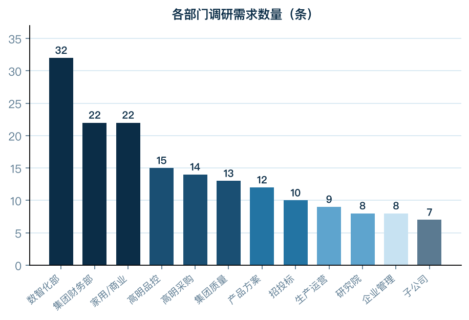 |  |
图1-1 调研需求类型分布（按 701 条需求分类）；图1-2 调研参与部门需求分布（两轮合计 29 个部门）
工作方法论
2.1TOGAF整体说明
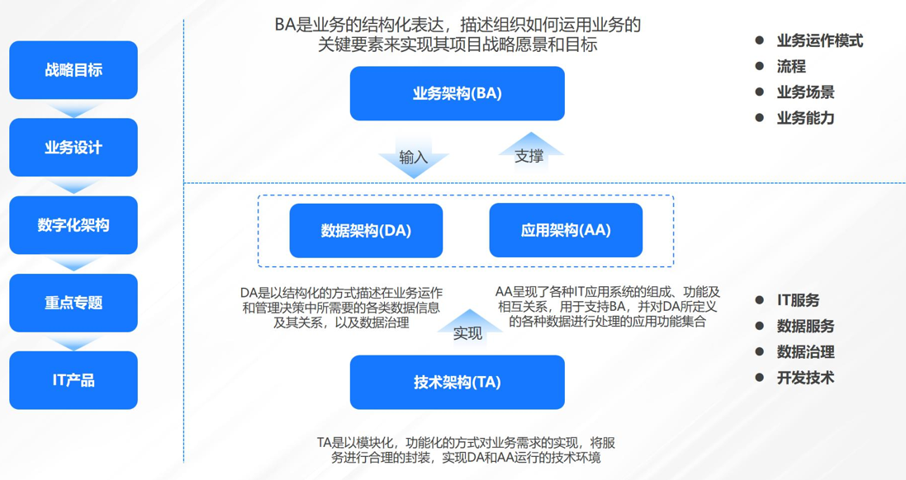
佛山照明数字化转型诊断规划思路，结合公司总部和业务集群的业务特点，设计数字化转型蓝图架构。通过对内部核心驱动力和外部生态环境分析，进一步解读业务战略、现状评估和案头研究和对趋势及实践研究，根据TOGAF方法论输出企业架构包含业务架构、应用架构、数据架构、技术架构等。
TOGAF架构围绕公司业务运作模式、业务流程及场景、能力，借助IT服务、数据服务、开发技术等媒介，在“业务战略”和“数字化项目实施”之间架起连接桥梁。
诊断规划设计遵循4大原则指导。全局性，站在公司顶层设计层面，全面考虑公司各业务条线及业务领域，实现信息化业务全覆盖；适配性，结合业务战略目标及业务现状分析，实现蓝图方案与业务的一致对齐，敏捷应对业务变化；先进性，考量前沿技术应用领域及宏观发展趋势，确保诊断规划方案的理念及技术的前瞻性；安全性，充分考虑企业特性及相关监管要求，确保诊断规划方案符合相关安全性要求。
2.2业务架构
项目组将依据流程管理能力框架，并结合佛山照明管控需求，梳理并优化设计佛山照明业务架构体系（L3）。业务架构优化设计时，项目组将结合公司各业务集群行业特色和公司战略管控定位，以企业价值链和企业级流程为基础进行，并根据流程的通用性程度，明晰总部职能管控和各大业务集群L1-L3的流程层级，实现诊断规划工作的有效推进。业务架构是连接业务与IT的纽带和桥梁，形成业务和IT之间有效沟通的通用语言，用于实现业务需求到IT的顺利传导。同时业务架构用于指导应用架构的设计，进而指导佛山照明数字化转型诊断规划和落地实施。
2.3应用架构
整体应用架构：项目组将基于佛山照明整体战略发展诉求、诊断问题及优化方向，并借鉴领先对标实践，结合公司共性管控诉求及各板块个性化运用需求，以构建纵向公司管控、横向业务协同的一体化管控运营体系为核心方针，为佛山照明诊断规划设计公司整体数字化应用架构，实现以下三个层面的联动互通：
1.财务、生产、采购、投资等垂直管控领域实现集团分层管控，强化总部在战略管理、经营决策、资源配置等方面的管控效率。
2.总部与下级单位间、外部相关方之间实现联动运营、资源平衡调度及优化配置和协同共享。
3.形成佛山照明一体化全产业链管理体系，通过SAP一体化平台的升级搭建，将公司的产业经营数据、安全风控数据和资产设备控制数据等集成聚合，形成一站式驾驶舱，全面提升集团决策支撑水平。
分项系统功能：在设计应用架构总体框架的基础上，在规划中给出各个分项应用系统的初步设计，设计各应用所需包含的功能模块，识别该功能对应的新技术应用要求和管控要求。具体分项设计内容包括系统建设的目标、细分领域的业务能力覆盖、应用系统的功能模块设计以及应用系统与其他系统的集成关系。
应用系统集成：对于与外部存在数据交流和业务集成的功能模块，需要分析每个应用系统所集成的外部系统以及交互的数据项和数据的流向，得出各业务系统的外部集成关系。
基于整体应用架构的总体框架以及分项应用系统中对于单个系统的系统集成关系，绘制出未来佛山照明应用系统总体集成关系。通过梳理应用系统集成关系，实现系统间的横联纵通、数据的共享共用、业务的一致贯通，消除信息壁垒，促进业务协同。
2.4数据架构
数据架构能力要求：打造以数据为中心的企业数据架构，需要满足以下六项能力诉求：
1.敏捷性：为满足及时、快速的业务决策所需的数据需求，架构上支撑端到端敏捷数据交付能力，包括快速获取所需的数据源、从数据中获得业务洞察、洞察与业务流程对接集成等；
2.可扩展性：可扩展富有弹性的架构，满足当前和未来对不同数据规模、性能、分析模式、并发用户的要求；
3.自主性：应支持佛山照明相关用户及内部数据分析师以“自主服务”的模式使用数据和进行分析；
4.安全性：考虑数据安全方面的要求，能够支持多种类型和层次的用户和数据的访问和隔离，并满足监管对数据安全的要求；
5.端到端能力：着眼于构建端到端数据能力，包括数据获取能力、大规模数据存储和访问、计算的能力、从数据中获得业务洞察的数据可视化和分析的能力；
6.自动化：自动化功能有利于提高产生目标数据的效率，减少人为干预，提高数据质量，应纳入自动化处理的功能包括：数据获取和加载的自动化、数据质量检核的自动化、模型驱动的分析自动化、数据推送自动化。
数据架构重点目标：为满足数据架构的能力诉求，无论是改造网页端/移动端的企业，还是升级换代旧有的后台系统的企业，亦或是建立数据驱动的数据枢纽的企业，都应该转移所有旧有数据和规则至新的数据枢纽，才能最终实现全面的数智化运营。
数据架构初步建议：佛山架构数据架构以SAP升级版本为媒介，以存、通、联、用为主线，面向海量多维异构的数据，搭建数据架构，推动数据形成资产，并发挥应用价值：
接入层：由内外部数据源接入，数据进行集中存储，实现数据线上化；
平台层：通过数仓、大数据平台和数据治理平台构成数据资源平台，实现数据资产化；
应用层：通过构建领导管理驾驶舱及业务分析应用，实现运营数据化；
服务层：由报表服务、数据展现服务、数据管理服务等构成数据服务层，实现决策智能化。
2.5技术架构
技术架构规划的总体目标是为佛山照明建立一个具备高效，松耦合，高可用、高安全和易管理的数智化技术支撑环境，支撑上层业务应用系统建设，助力公司数字化水平的跃升。
技术架构规划以规划总体原则为指导，以数字化技术发展趋势为参考，以技术架构现状分析成果为基础，以满足应用系统建设需求为出发点，规划未来佛山照明的技术架构蓝图全貌。
初步考虑搭建底层数字平台，包括物联网平台、大数据、人工智能、区块链、基础数据共享、混合云平台架构、应用开发管理平台。
以物联网平台为例，应用管理方面，考虑搭建应用开发/运营平台（DMP），提供场景的互联网应用开发、部署互联网应用运营监控；计算管理方面，考虑搭建数据采集和分析平台（DAP），提供边缘计算、数据采集、数据分析、数据服务等功能；感知管理方面，考虑搭建设备管理平台（IMP），提供设备发现、配置管理、设备注册、业务开通等功能；传输管理方面，考虑搭建连接管理平台（NMP），提供便捷链接互通，5G/互联网/移动互联网。
企业业务现状描述
3.1现状诊断思路
佛山照明当前的商业模式可概括为：以通用照明为基本盘，通过内生增长与外延并购双轮驱动，向车灯、海洋照明、航空照明等高附加值新赛道扩张，致力于从“照明产品制造商”向“智能健康光环境服务商”转型的集团型企业。其核心价值链覆盖产品定义、研发设计、自制或外采、生产制造、多渠道路径分销到终端客户的完整链条。
公司正处于从“工厂或法人独立运营”到“事业部整合”转型，并初涉国际化（泰国建厂）的关键发展阶段。目前，其业务模式呈现出“制造加零售（电商）”的混合业态特征。
3.1.1转型金字塔诊断设计思路阐述
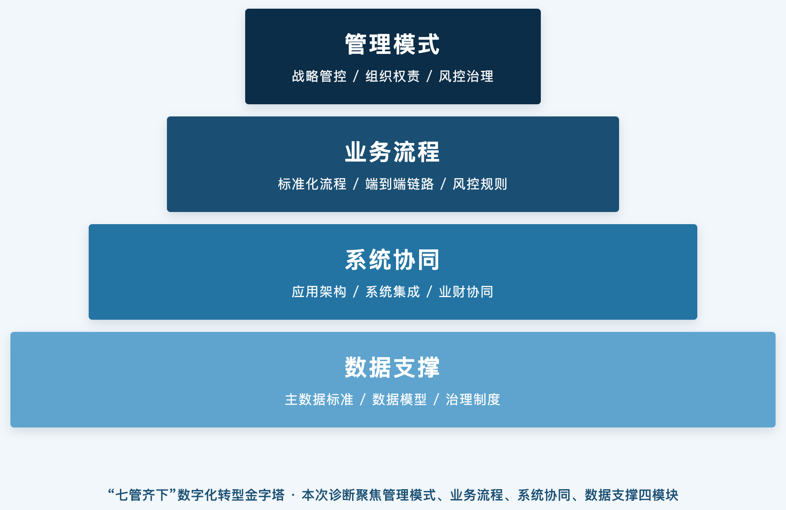
结合公司商业模式定调基础上，当前佛山照明的数字化转型诊断设计建设的愿景，应在充分贯彻党中央及总部发展战略，借鉴业内领先实践经验并充分考虑各产业板块中长期发展诉求，从战略与管控模式、组织职能、流程体系、绩效体系、风控体系、系统协同、数据支撑等领域自上而下、环环相扣、紧密衔接（任何相邻环节的逻辑衔接缺失均可能造成最终落地体系有效性的折扣），最终循序推进、稳健稳妥打造佛山照明数字化转型诊断设计体系，形成全国综合性光健康照明企业数字化转型建设标杆。
首先，需基于公司业务及数字化发展战略及各类国资委数字化相关政策解码公司各职能组织、业务板块组织层级未来发展定位及联系，进而根据解码定位结果明确公司各组织层级未来数字化体系建设优化方向及管控模式，为后续公司各组织职能及职责界面设置、业务流程设计、绩效及风控体系等梳理提供顶层指引；其次，基于各业财组织层级定位及建设优化方向、管控模式，完善各级单位、各业财组织职能职责界面及相关权责协同设置；之后，衔接前序职能职责界面，梳理完善跨业务、财务、投资、供应链等各职能条线的管控要点及跨组织层级的公司标准化业务流程体系，形成业务流程操作说明书及风控管控要点说明书；再次，顺理成章产出可衔接顶层宏观方向指引及中观职能职责界面、业务流程体系、风控体系的微观数字化系统协同体系及数据治理体系；最后，按需完善数字化转型绩效指标体系以倒逼保障公司数字化转型体系建设变革落地的有效性、执行效率。
基于项目章程本次数字化诊断工作涵盖“七管齐下”金字塔中的管理模式、业务流程、系统协同及数据支撑四模块。
3.1.2诊断维度与TOGAF的衔接
TOGAF 标准 4A 架构由业务架构 BA、应用架构 AA、数据架构 DA、技术架构 TA自上而下递进耦合，遵循战略落地、业务定义、系统承载、数据贯通、底座支撑闭环逻辑；佛山照明本次数字化转型整体路径为战略与管控、组织权责、流程与风控、系统协同、数据治理、绩效闭环，本次诊断聚焦 “七管齐下” 金字塔中的管理模式、业务流程、系统协同、数据支撑四大模块，二者天然分层匹配、逻辑一一咬合。整体遵循战略向下灌注、底层架构向上支撑双向闭环，相邻层级无断层衔接，解决架构脱节导致落地失效问题。
模块1：战略解码 + 管控模式设计归属【TOGAF 业务架构 BA（顶层主干）】
贯彻党中央、国资监管政策、集团总部战略，解码照明主业、光健康多产业板块各层级组织定位，明确总部 / 事业部 / 分子公司数字化管控模式，输出组织定位规则、管控权责顶层指引，为组织职能、流程、风控设计定基调。
映射 BA 核心内涵：业务架构本质是战略业务化、业务组织化、组织管控化，定义企业商业模式、治理模式、组织层级、业务域边界、管控规则与权责体系。佛山照明管理模式模块全部归集于业务架构范畴。
BA 承载内容：战略管控模式、产业板块业务定位、组织层级权责框架、风控治理顶层规则、数字化转型绩效顶层导向。
模块 2：组织职能权责梳理 + 全链路标准化流程、风控体系搭建深化【业务架构 BA】
基于管控模式，厘清各级业财组织权责界面，打通供应链、财务、投资、营销跨条线管控要点，搭建标准化业务流程体系、风控管控要点手册。
映射关系：业务架构向下延伸落地为组织架构、端到端业务流程、业务风控规则、权责矩阵，是业务架构从宏观战略管控下沉至具象业务运行规则的过程；本次诊断业务流程模块完整落地在业务架构层。
模块 3：数字化系统协同体系搭建归属【TOGAF 应用架构 AA】
承接上层业务架构的职能、流程、风控要求，搭建适配业务流程的应用系统布局、系统间协同逻辑，打通业财投供应链系统交互关系。
映射 AA 核心内涵：应用架构承接业务架构需求，规划应用组合、系统模块划分、系统集成关系、业务能力与应用系统匹配关系，回答用哪些系统、系统之间如何协同承接业务运转。本次诊断系统协同模块完全对应应用架构。
AA 承载内容：照明 ERP、供应链管理、财务共享、风控平台、营销数字化等应用布局、系统集成拓扑、跨系统业务流转规则。
模块 4：数据治理与数据支撑体系建设归属【TOGAF 数据架构 DA】
衔接业务流程、应用系统架构，搭建全域数据治理体系、数据流转链路、数据标准体系，打通业务、 财务、资金全链路数据，实现风控穿透、经营分析的数据底座。
映射 DA 核心内涵：定义企业数据资产、数据模型、数据标准、数据流转路径、数据治理规则，承接业务对象并落地为结构化数据实体，向上支撑应用系统的数据供给；本次诊断数据支撑模块归属数据架构。
DA 承载内容：主数据标准、业财数据模型、数据血缘、数据治理制度、经营分析指标数据集。
模块 5：数字化绩效闭环体系（绩效 + 风控迭代）双向贯通BA+AA+DA，形成架构治理闭环
绩效体系一方面反向约束业务架构的管控效率、流程落地效果，另一方面通过绩效指标倒逼应用系统、数据架构持续迭代优化，构成 TOGAF 架构治理闭环，保障整套数字化体系稳健落地，最终打造照明行业数字化标杆。
| 诊断模块 | TOGAF 架构 | 模块承载核心工作 | 架构层级作用 |
|---|---|---|---|
| 管理模式 | 业务架构 BA | 战略解码、集团管控模式设计、组织层级定位、权责治理规则 | 顶层设计，定义数字化「做什么、怎么管」，约束下游所有架构设计 |
| 业务流程 | 业务架构 BA | 跨业务 / 财务 / 供应链标准化流程梳理、流程风控嵌入、流程说明书编制 | 业务架构落地载体，将管控模式转化为可执行业务动作 |
| 系统协同 | 应用架构 AA | 应用系统规划、系统间集成协同、业务流程与系统功能匹配 | 承上启下，用信息化系统承载上层业务流程与管理模式 |
| 数据支撑 | 数据架构 DA | 全域数据治理、数据标准、数据链路搭建、指标数据底座建设 | 贯穿业务与应用，实现流程可追溯、风险可穿透、绩效可量化 |
3.1.3各诊断维度内在联系
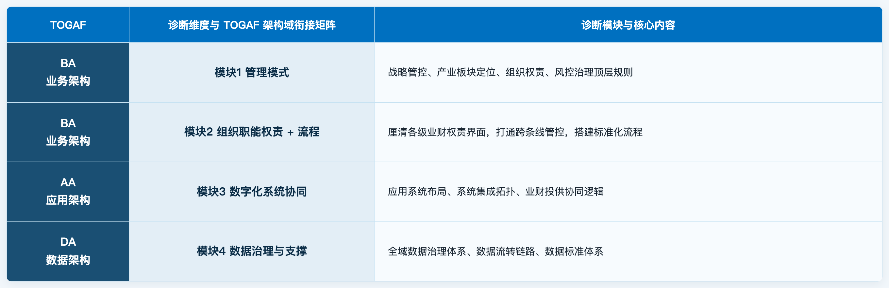
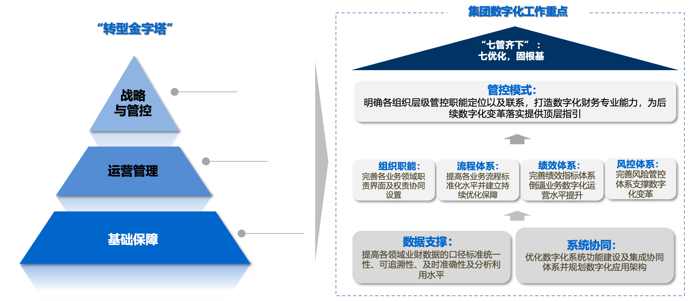
佛山照明数字化诊断规划工作主线“一横一纵两核心三能力”：
“一横一纵”：集团管控与业务流程共享（含管理与流程）
纵向集团管控——管方向：数字化支撑战略闭环管控，实现对公司整体经营和业务情况的可视、可控、可管，保障战略落地。
横向业务流程共享——统服务：数字化推动建设以ERP标准化流程共享为先的流程共享服务体系，实现标准化职能服务集约共享
“两核心”：产业数字化和数字产业化
产业数字化：聚焦四大板块业务需求，以数字化赋能重点业务场景，实现提质增效；同时积极推进跨板块协同的关键场景，共同发展。
数字产业化：结合自身业务优势，自建数字化核心能力，服务内部同时推动新业务的创新孵化，成为新增长极。
“三能力”：数字化系统平台能力、数据资产能力和数字化治理能力（含系统与数据）
数字化系统平台能力：结合现有资源、构建公司统一技术平台架构，支撑各环节业务高效有序开展。
数据资产能力：盘点数据需求、建立数据治理体系，建立数据标准和管理机制，推动全公司数据资产价值最大化。
数字化治理能力：建立面向未来的敏捷创新型组织体系和运营机制，同时注重树立数字化转型意识，培养转型人才，推动数字化转型落地。
3.2商业模式提炼（商业画布）
3.2.1价值主张
- 产品价值：提供高品质、高性价比的照明产品（光源、灯具）。
- 场景价值：针对家用、商用、汽车、海洋、体育、航空等场景提供专业化照明产品与解决方案。
- 战略升级价值：从“产品销售”向“品牌出海、产业出海”及“产品+方案+服务”的战略跃升路径，目标成为“国内领先的智能健康光环境服务商”。
3.2.2客户细分
- 国内及海外渠道客户：家用、商用、电商经销商，工程项目方。
- 主机厂客户：如上汽通用五菱、长安汽车等（车灯业务）。
- 细分市场客户：海洋、体育、航空等领域的专业客户。
- 终端消费者：通过电商、零售门店触达；电商终端消费者已成为增速最快的细分客群。
3.2.3渠道通路
- 国内渠道：传统五金流通（经销商或专卖店）、商用工程直供、电商平台（京东、天猫、抖音、拼多多、自有商城、亚马逊）、家装公司及设计师等新流量。
- 海外渠道：以OEM代工为主，自主品牌为辅；通过海外代理商、大客户（商超）及自建泰国工厂拓展。
- 车灯渠道：直供主机厂（前装）。
3.2.4关键业务
- 产品研发与制造：照明产品（光源、灯具）及车灯的自主研发与规模化生产。
- 供应链整合：涵盖自制、外购（OEM或ODM）、委外加工的供应链管理与优化。
- 渠道运营与管理：统筹线上线下、国内海外、工程及零售的多渠道销售体系。
3.2.5核心资源
- 品牌与口碑：“中华老字号”、国内照明行业品牌价值第二（475.07亿）。
- 规模与制造：高明、新乡、南宁等多家生产基地，规模化制造能力。
- 技术与并购：研发体系（照明研究院、车灯研究院）、专利（1743项）、并购企业（燎旺车灯、国星光电等）带来的技术与市场资源。
- 资本平台：深交所上市公司，融资渠道多元。
- 产业链协同：国星光电作为上游LED封装资源带来的产业链协同优势。
3.2.6重要伙伴
- 上游供应：原材料及元器件供应商。
- 并购标的：如燎旺车灯、国星光电、沪乐电气、北京航信，引入新赛道的技术与渠道。
- 生态合作：与主机厂的合作有交易型转向战略协同型；与华为、小米等智能家居生态链企业合作；与设计院、工装公司合作。
- 产学研：与高校、研究机构联合研发。
3.2.7成本结构
- 原材料成本：产品成本中材料成本占比80%以上。
- 制造成本：生产人员占比近70%，涉及人工、设备折旧、制造费用。
- 销售费用：销售费率仅5%，但计划加大投入。
- 研发费用：研发投入强度6.34%（2024年）。
3.2.8收入来源
- 通用照明产品销售：为营收基本盘，占比超50%，但呈下降趋势。
- 车灯产品销售：第二大收入来源（2024年营收18.22亿），为主要增长点。
- LED封装及组件（通过国星光电）和贸易及其他。
3.3核心价值链
佛山照明的价值创造过程可拆解为主营活动和支持活动。
3.3.1主营活动
- 产品定义与研发
开展市场需求收集与洞察，来源包括各事业部销售端、市场调研及特战队反馈，由产品及方案中心承接并定义产品概念。研究院负责将概念转化为可制造的研发BOM（EBOM）。研发流重点攻克光学、散热、智能交互等关键技术。
- 供应链与采购
开展成品外购（OEM或ODM）的寻源、核价与供应商管理，以及生产物料的招采、供应商准入与定价。采购执行由各事业部或生产基地完成。业务模式呈现“招采分离”特征，“外购与自制”为常态化的决策过程。
- 生产制造
依托多个生产基地开展规模化生产制造。产品结构正从光源向灯具转型，从规模化标准品向“规模化加定制化”混合模式转型。部分车间（如车灯模组）已部署MES，生产模式以MTS（按库存生产）和MTO（按订单生产）并存。
- 市场营销与销售
运营覆盖家用、商用、电商、国际、车灯的多事业部独立销售体系。传统五金流通渠道为主导，电商与工程渠道持续拓展。海外销售以OEM为主、自主品牌为辅。销售流程涵盖订单、价格、返利、信用、开票等环节。
- 交付与服务
依托生产基地（高明为主）开展排产与物流交付。海外本地化仓储与售后能力正在构建中（如泰国工厂）。售后服务及配件管理同步运作。
- 质量管理
执行贯穿产品全生命周期的质量管理体系，覆盖来料、过程、成品及售后环节。通过建立产品质量安全风险台账与数据驱动的追溯机制，确保产品合规性。
3.3.2支持活动
- 战略与投资管理
开展集团中长期战略规划编制与滚动修订，组织业务单元战略分解与对齐。执行投资组合管理，涵盖投前立项评估、投中过程监控与投后绩效评价。
- 人力资源（基于常规人力资源活动，非客户描述）
开展组织架构设计与人员编制管控，实施人才招聘、配置与干部梯队建设。执行薪酬福利核算发放、绩效考核及激励方案制定与实施，管理考勤、休假与工时制度。兼管劳动关系、人事档案、培训开发及员工关系维护等事务。
- 财务管理
执行集团资金统筹调度、银行账户及票据管理、外汇风险管控，保障资金安全与流动性。开展全集团会计核算、成本管控与财务报表编制，组织全面预算管理与执行监控。统筹税务合规与筹划。
- 企业管理及运营
开展公司年度经营计划的制定与监控，设定并监控关键经营指标（KPI），督导各业务单元经营任务执行；组织开展经营分析、业务诊断、信用管控、库存监管相关工作；组织各业务单元的绩效考核与评价。牵头建设并优化公司制度流程体系，识别并推动消除跨部门流程断点，保障组织运营效率。
- 合规、风险管控
执行合同法律审核与合规审查，建设内控体系并开展内部审计监督。与各业务单元协同，识别、收集业务推进中的潜在风险，及时采取应对措施以规避或降低风险影响。
- 新业务孵化
执行海洋照明、体育照明、航空照明等新赛道的从0到1孵化，涵盖机会发现、市场研究、产品定义到商业模式验证。开展从线索收集、概念验证到解决方案输出的全过程推进，高度依赖跨部门协同。
- 数字化与信息系统
开展数字化系统建设、运维与基础设施保障，涵盖需求分析、系统选型、项目实施、二次开发、数据管理及日常运维，统筹研产供销服各领域系统集成与互联互通。
3.4核心业务流程
基于核心价值链，梳理如如下核心业务流程，贯穿佛山照明价值创造全过程。
| 流程组编号 | L3流程组名称 | L2子业务域 | L1业务域 |
|---|---|---|---|
| 1.1.1 | 战略分析与规划制定 | 战略规划 | 战略与投资管理 |
| 1.1.2 | 战略目标分解与宣贯 | 战略规划 | 战略与投资管理 |
| 1.2.1 | 投资机会评估与立项 | 投资与项目管理 | 战略与投资管理 |
| 1.2.2 | 投资项目过程监控 | 投资与项目管理 | 战略与投资管理 |
| 1.2.3 | 投后评价与复盘 | 投资与项目管理 | 战略与投资管理 |
| 2.1.1 | 市场线索与机会识别 | 新赛道机会探索 | 新业务孵化 |
| 2.2.1 | 产品概念与商业模式定义 | 新业务开发与验证 | 新业务孵化 |
| 2.2.2 | 跨部门协同产品开发 | 新业务开发与验证 | 新业务孵化 |
| 2.2.3 | 新业务市场导入 | 新业务开发与验证 | 新业务孵化 |
| 3.1.1 | 市场需求收集与分析 | 产品规划与定义 | 产品定义与研发 |
| 3.1.2 | 产品概念定义与立项 | 产品规划与定义 | 产品定义与研发 |
| 3.2.1 | 研发BOM与设计输出 | 产品研发与设计 | 产品定义与研发 |
| 3.2.2 | 产品测试与认证 | 产品研发与设计 | 产品定义与研发 |
| 3.3.1 | 生产BOM与工艺路线建立 | 产品量产导入 | 产品定义与研发 |
| 3.3.2 | 试产与量产准入 | 产品量产导入 | 产品定义与研发 |
| 4.1.1 | 供应商寻源与准入 | 采购与供应商管理 | 供应链与采购 |
| 4.1.2 | 采购询价、核价与定价 | 采购与供应商管理 | 供应链与采购 |
| 4.2.1 | 采购需求与计划管理 | 采购执行 | 供应链与采购 |
| 4.2.2 | 采购订单下达与跟催 | 采购执行 | 供应链与采购 |
| 4.2.3 | 采购到货与发票校验 | 采购执行 | 供应链与采购 |
| 5.1.1 | 主生产计划与排程 | 生产计划与排程 | 生产制造 |
| 5.1.2 | 物料需求计划（MRP） | 生产计划与排程 | 生产制造 |
| 5.2.1 | 生产工单下达与备料 | 生产执行与控制 | 生产制造 |
| 5.2.2 | 车间生产与报工 | 生产执行与控制 | 生产制造 |
| 5.2.3 | 过程质量控制（IPQC） | 生产执行与控制 | 生产制造 |
| 5.3.1 | 生产完工入库 | 生产完工与入库 | 生产制造 |
| 6.1.1 | 销售计划与目标制定 | 市场与渠道管理 | 市场营销与销售 |
| 6.1.2 | 渠道策略与定价管理 | 市场与渠道管理 | 市场营销与销售 |
| 6.1.3 | 客户及渠道开拓 | 客户关系管理 | 市场营销与销售 |
| 6.1.4 | 客户准入 | 客户关系管理 | 市场营销与销售 |
| 6.1.5 | 客户信用管理 | 客户关系管理 | 市场营销与销售 |
| 6.2.1 | 商机与客户需求管理 | 销售订单管理 | 市场营销与销售 |
| 6.2.2 | 销售订单创建与审批 | 销售订单管理 | 市场营销与销售 |
| 6.2.3 | 订单库存占用与交期承诺 | 销售订单管理 | 市场营销与销售 |
| 7.1.1 | 拣货、包装与发货 | 仓储与物流管理 | 交付与服务 |
| 7.1.2 | 物流跟踪与签收 | 仓储与物流管理 | 交付与服务 |
| 7.2.1 | 客户投诉与质量问题处理 | 售后与服务管理 | 交付与服务 |
| 8.1.1 | 成本核算与分配 | 财务核算与关账 | 财务管理 |
| 8.1.2 | 应收/应付账款管理 | 财务核算与关账 | 财务管理 |
| 8.2.1 | 资金计划与结算 | 资金与税务管理 | 财务管理 |
| 8.2.2 | 税务申报与合规 | 资金与税务管理 | 财务管理 |
数字化管理现状描述
4.1数智化部组织及人员
数智化部是公司数字化工作的日常管理机构，全面负责公司数字化转型、系统建设与运维、网络安全等工作。核心职责包括组织编制数字化规划与年度计划、建设基础性数字化平台、统筹业务系统立项与建设、建立网络安全保障体系等。
部门人员编制定为16个。设部长1名、副部长1名、项目管理岗1名、系统开发岗2名、网络安全岗2名、硬件维护岗1名、需求分析岗4名、AI需求岗1名、AI开发岗2名、采购行政岗1名。
当前的人员配置挑战：
- 编制与实有人数: 根据6月24日的数智化部调研，部门实有人员17人。如未来加大数字化建设强度，对数智化部的人员配置会提出更多、更高要求。
- 团队结构短板: 团队成员多为技术背景，具备业务工作经验的人员不多，暂无架构设计、数据治理专职人员。
- 工作负荷: 以公司约8000名员工的体量来看，现有人力在系统运维、项目建设、报表支持和业务咨询之间压力较大，存在一人多岗情况，也易引起“全而不专”现象。
- 组织能力评估: 按照当前的技术发展趋势，纯技术类（特别是代码开发）需求会逐渐下降，而既懂业务又懂数字化解决方案设计还懂管理的“复合需求”会显著上升。
4.2数字化管理现状
根据《数字化工作管理办法（试行）》、数智化部调研纪要及管理层访谈纪要，梳理出公司数字化管理的现状如下：
- 制度与组织:
- 数字化管理办法: 《数字化工作管理办法（试行）》已经完成修编，明确了“领导小组-数智化部-各部门及所属企业”的三级管理体系，并计划上党委会审批。
- 管理组织架构: 领导小组负责顶层决策，数智化部负责日常管理与建设统筹，各业务部门（含事业部）是需求提供方和应用主体，所属企业负责本单位数字化工作。
- 项目管理与治理:
- 缺乏体系化管理: 目前未建立统一的、体系化的数字化运维和项目管理体系，也无有效的数字化管理手段（如ITSS平台）。过往项目（如APS、MES、营销平台）推进不顺，核心原因既包括供应商支持不力，也包括数智化配套管理制度、规范、流程、体系缺失等方面因素。
- 流程管理重视度不足: 清晰、准确、可执行的业务流程设计（非OA审批流程）是数字化项目成功的前提条件之一，而公司流程建设处于初级阶段。尽管企管部已配备一名专职人员负责公司的流程和制度管理工作；但流程工作开展多局限在本部门内部，且常将“业务流程”等同于OA审批流；尚未形成稳定的端到端业务流程体系。
- 系统建设与运维:
- 数字化系统建设分散，运维承压: “数智化部负责通用基础平台与集成，业务部门主导专用系统”的模式，虽然体现了业务驱动，但也带来了数据标准不一、接口复杂、运维责任分散等问题。这是当前佛山照明数字化管理现状中的一个关键特征。
| 系统 | 建设部门 | 运维部门 |
|---|---|---|
| SAP | 数智化部（技术支持） | 外部顾问、数智化部 |
| 用友财务共享平台 | 财务管理部（主导）、数智化部（技术支持） | 用友实施团队、财务管理部 |
| 聚水潭电商ERP | 电商事业部、数智化部（技术支持） | 聚水潭厂商、电商事业部 |
| 顺丰WMS | 电商事业部、数智化部（技术支持） | 顺丰厂商 |
| MES(生产执行系统) | 车灯事业部、研究院、数智化部（技术支持） | 车灯事业部、MES厂商 |
| PLM(产品生命周期管理) | 研究院、产品及方案中心、数智化部（技术支持） | 研究院、PLM厂商 |
| OA系统(泛微) | 企业管理部、数智化部 | 数智化部、泛微厂商 |
| SRM(供应商关系管理系统) | 招投标中心、供应链中心、数智化部（技术支持） | 招投标中心、SRM厂商 |
| 佛照商城(B2B订货平台) | 家用事业部、电商事业部、数智化部（技术支持） | 电商事业部、商城厂商 |
| AI平台/知识库 | 数智化部（自研） | 数智化部 |
| Finereport | 数智化部 | 数智化部 |
| 防伪防窜系统 | 高明仓库、数智化部（技术支持） | 数智化部 |
| 加密系统 | 研究院、数智化部（技术支持） | 数智化部 |
| 官网 | 企业管理部、数智化部（技术支持） | / |
| 企业云盘 | 数智化部 | 数智化部 |
| 人力资源系统 | 人力资源部、数智化部（技术支持） | / |
| 档案管理系统 | 办公室(党委办、维稳办)、数智化部（技术支持） | 数智化部 |
| 电子签章系统 | 法律与风控事务部、数智化部（技术支持） | 数智化部、契约锁厂商 |
| 司库系统 | 财务管理部、数智化部（技术支持） | 浪潮厂商、财务管理部 |
| CRM（客户关系管理系统） | 商用事业部、家用事业部、数智化部（技术支持） | 纷扬科技厂商、数智化部 |
| 企业微信/邮箱 | 数智化部 | 腾讯厂商、数智化部 |
- 历史代码负担: 最突出的是SAP系统中存在大量自开发代码、增强、接口和自定义报表；这种情况给运维和系统升级带来非常大的挑战。项目组已启动自定义代码监控，识别高频、低频对象，以确定升级迁移范围，避免将不必要历史包袱原样带入新系统。
流程管理现状描述
5.1组织及人员设置
- 流程与制度岗位目前只有一名专职人员，主要负责公司制度和流程管理，目前更偏向制度管理和审批流管理。
- 流程负责人认定在部门内部相对容易，但跨部门端到端流程负责人认定较难落到个人层面。目前公司级端到端流程负责人缺失。
5.2流程建设举措
- 研发域试点：2026年启动，当前仍处于调研阶段。
- 权责清单梳理：企管部曾重新梳理权责与OA事项，并强制指定事项负责人，以事项主导部门为单位支撑制度修订和审批审核。
- 流程梳理：部分部门已在内部推动流程梳理工作，但跨部门、跨领域端到端流程梳理及优化工作欠缺。
- OA流程底线规范：OA系统上审批流程建设成果较好，很大程度上满足了管控需求。
5.3流程资产沉淀
- 历史内控流程：已有一版较完整资料，部分流程可到L4/L5颗粒度，偏合规、审批、风险控制，含流程说明、表单、风险矩阵、KCP等；主要问题是业务前后端链路不完整，无法展示上下游业务活动。
- OA审批流程：共491条；日常使用较规范，表单、审批路径和生效日期较清晰。
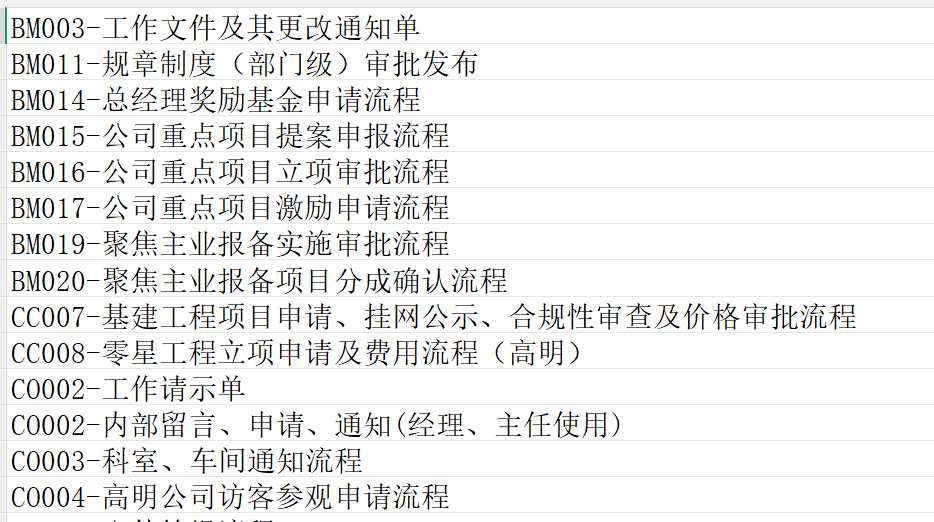
- L1-L3流程框架：已有一版较全的通用框架，约13个一级流程分支，但与佛照实际业务匹配度不足，更像通用模板。
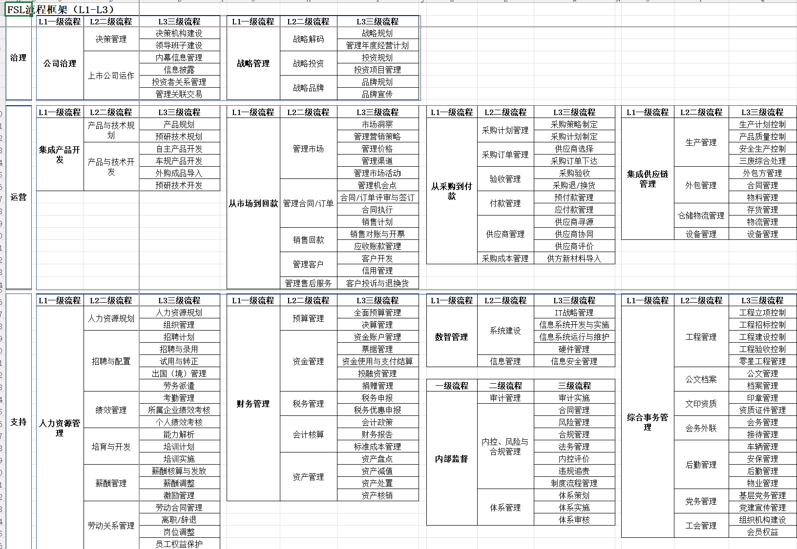
- 权限/权责清单：企管部曾重新梳理权责与OA事项。
- 流程试点：研发部门已初步提供资料。
5.4流程管理挑战
- 流程认知层面：业务部门对“流程”的认知大多停留在OA审批流层面，尚未形成稳定的端到端业务流程管理体系；对行业流程管理理论及最佳实践等认知有待提升。
- 组织保障层面：流程与制度岗位目前只有一名专职人员，难以承载全公司流程治理；各部门及事业部流程治理责任待明确，业务部门配合机制不足。
- 制度机制层面：缺少流程管理制度、编码规则、流程负责人职责、发布审核、版本管理和变更机制。
- 流程与系统层面：OA流程可管控，但SAP及其他业务系统流程沉淀在各系统内，无法统一归集；线下流程、OA流程、SAP流程和其他系统流程分散管理，缺少统一流程管理平台和流程资产治理机制，容易形成制度、流程、系统三套口径。
- 跨部门协同层面：流程按部门视角绘制，未打通跨部门链路；部门边界模糊，推诿扯皮现象存在；跨部门端到端流程负责人认定阻力较大。
- 流程框架适配层面：L1-L3框架与佛照实际业务匹配度不足，缺少结合佛照业务的验证、裁剪和确认，看似完整但难以指导实际流程梳理和系统落地。
- 绩效考核层面：制度合规可纳入部门指标，但流程本身暂无KPI和过程考核，数字化项目缺少过程性考核指标。
数字化系统建设历程说明
6.1数字化系统建设详情
- 2026年之前主要建设成果：
| 应用系统名称 | 系统简介/功能介绍 | 建设时间 |
|---|---|---|
| SAP ECC版 | 实现FI财务会计、PP生产计划、MM物料管理、QM品质管理、SD销售与分销等模块的线上化管理，为公司所有系统的基础。目前版本老旧，存在无法按渠道分析统计、凭证替代需每年修改源代码、生产订单损耗分摊不易操作、不支持指定供应商发货、不支持公司间转卖业务、物料需求计划数据不准确、供应商和客户主数据的冗余数据比较多且同一供应商存在多个编码、SAP接口较多、未实现单据附件上传功能等问题。 | 2008年 |
| 星源HR | 系统含考勤管理与薪酬计算。该系统采用的是CS（客户端/服务器）架构，存在兼容性不佳的问题，且受限于技术框架，无法进行进一步的优化与调整。此外，由于该系统已长时间投入使用，系统内部的关键数据字段长度设计已无法满足日常需求，频繁引发报错情况，影响了日常运作效率。 | 2008年 |
| OA 基础版 E9 | 流程审批、协同工作、公文管理(国企和政府机关)、沟通工具、文档管理、信息中心、关联人员、系统集成、门户定制、通讯录、工作便签。原泛微E8版本存在技术平台限制、低代码平台不完善、二次开发成本、流程管理复杂性、系统性能与维护等问题，于2021年03月19日进行OA系统E8版本升级E9 基础版，升级内容包括流程引擎、协同工作、公文管理(国企和政府机关)、沟通工具、文档管理、信息中心、关联人员、系统集成、门户定制、通讯录、工作便签。 | 2019年 |
| SRM系统 | 现系统为SAAS版本（云版本），含供应商生命周期、采购需求、询价管理、价格管理、订单管理、绩效管理、质量管理等，缺少绩效管理模块、现场评审、供应商画像、质量管理等功能。目前存在供应商绩效考核为线下统计后录入、物料图纸及相关质量要求标准仍然手工逐个下载打包线下发给供应商、系统数据报表运转缓慢等问题。 | 2019年 |
| 加密系统 | 亿赛通加密系统融合了文档加密、数据分类分级、访问控制，能够对公司核心研发数据从生产、存储、流转、外发到销毁进行全生命周期保护。亿赛通在使用过程中，加密文件在内部系统流转交换时暂不支持直接解密，用户需先将文件下载至本地，再通过加密系统进行解密处理，操作繁琐。 | 2021年 |
| 佛照商城系统 | 将公司公众号与公司产品对接，实现公众号一键跳转公司商城，可在线选购产品、浏览产品图片、产品参数等。但商城系统无法提示折扣、满减等信息，需要与客户另行沟通进行促销，由销售助理在SAP录单，并未完全打通系统，导致业务人员工作量增加。 | 2016年 |
| 官网 | 公司官网用于展示企业信息、产品服务、品牌形象等。它不仅是企业数字营销的重要组成部分，也是企业与外界互动的重要平台。 | 2017年 |
| 企业云盘 | 企业云盘基于云计算技术的在线存储服务，专为企业用于存储、共享、管理和备份企业数据和文件的。我司在2020年10月采购了单台存储一体机，将其单台使用上线，尚未进行负载均衡处理，且存储容量较低。 | 2020年 |
| APS | 2020年采购了Asprova APS，公司的 LED车灯车间物料种类多达 2000种以上,工单下发前的物料齐套由人工确认,经常会出现物料不到位,物料计划不及时等影响生产的情况等，实际在使用过程计划与排程存在一定复杂性与特殊性，预测模型存在误差也影响可用性，导致在2022年Asprova APS便停用了。 | 2020年 |
| 聚水潭电商ERP | 面向电商行业的SaaS一体化供应链管理系统，深度对接淘宝、京东、抖音、拼多多等线上平台，整合多店铺订单同步、智能打单、仓储库存、采购分销、售后、电商财务对账全链路能力，实现一盘货统一管理，解决爆单、库存混乱、多平台对账繁琐痛点，支撑线上零售业务高效数字化运营 | 2023年 |
| PLM系统 | 以产品研发数据为核心的研发协同平台，覆盖产品概念设计、物料管理、图纸 / BOM 管理、项目管控等产品生命周期，统一管理图纸、配方、技术文档，打通研发、生产、采购数据壁垒，减少重复设计、规范版本变更，缩短新品研发周期，沉淀企业核心技术资产。 | 2022年 |
| Finereport | 企业级专业 Web 报表开发平台，支持零代码拖拽式设计各类中国式复杂报表，可无缝对接 ERP、MES、PLM 等多业务异构数据源，集数据填报、多维可视化分析、定时报表推送、移动端展示、分级权限管控于一体，统一企业数据输出口径，快速搭建经营看板、财务、生产、人力分析报表，消除数据孤岛 | 2020年 |
| 防伪防窜系统 | 基于一物一码数字化溯源管控平台，为每件商品赋予唯一加密数字身份码，串联生产赋码、仓储出入库、经销商流通、终端销售、消费者核验全流程；兼具真伪鉴别、渠道流向追踪、窜货预警功能，实时监控商品跨区违规流通，打击假冒伪劣，维护渠道价格体系与品牌权益。 | 2022年 |
| 加密系统 | 采用国密算法的终端文件安全防护平台，对研发图纸、财务报表、合同文档、源代码等核心资料实现无感透明加密；文件内网正常编辑，未经授权外发、拷贝自动乱码，配套精细化权限分级、外设管控、操作行为审计、外发审批流程，从源头防范内部数据泄露，满足企业数据安全合规要求。 | 2018年 |
| 人力资源系统 | 由于星源HR框架与功能已无法满足公司实际业务需求，重新采购一套一体化全流程人力数字化管理平台，覆盖组织架构、招聘入职、考勤休假、薪酬核算、绩效考评、培训发展、劳动合同、员工自助、离职的人事生命周期管理。 | 2023年 |
| 档案管理系统 | 覆盖实体档案、电子档案全生命周期的合规管理平台，实现文件收集、分类归档、智能 OCR 检索、线上借阅审批、库房管理、到期鉴定销毁全流程数字化，支持权限水印、操作留痕、档案统计，解决纸质档案查找难、保管风险高、审计追溯无依据问题，符合国家电子档案管理规范 | 2023年 |
| MES系统 | LED车灯车间使用，连接 ERP 计划层与车间设备层的生产执行中枢，实时采集车间人、机、料、法、环、测等要素数据，涵盖生产排产、工单报工、工序管控、质量检验追溯、设备运维、车间物料流转、生产看板分析等。 | 2026年 |
| 财务共享平台 | 用友BIP 财务共享系统，根据上级单位要求，搭建集中式财务服务平台，统一承载全公司费用报销、应收应付、集中核算、发票税务、资金结算、资产账务业务，依托 RPA、OCR 实现单据自动识别、智能审核、账务自动生成，标准化财务流程，集中管控核算风险，降低重复财务人力成本，实现业财税一体化协同。 | 2025年 |
| 司库系统 | 浪潮司库系统，根据上级单位要求，搭建资金集约化管控平台，对接多家银行实现银企直连，统一管理账户、收付款、票据、投融资、现金流预测、外汇、资金风险监控；统筹资金池，优化资金调拨、降低融资成本，实时监控资金流向与流动性风险，为资金统筹、投融资决策提供完整数据支撑。 | 2025年 |
| 电子签章系统 | 符合《电子签名法》的可信电子签署平台，依托 CA 数字证书实现合同、单据、审批文件在线合法签署，支持单人签、多方会签、骑缝章、时间戳存证；签署文件具备不可篡改、司法可举证特性，打通OA系统，替代纸质盖章流程，实现线上合同全生命周期无纸化管理 | 2025年 |
| CRM（客户关系管理系统） | 面向销售全流程的客户数字化运营平台，统一管理客户档案、线索跟进、商机推进、报价合同、售后跟进、回款记录，沉淀客户全生命周期交互数据；支持销售过程管控、客户分层分析、业绩统计，打通前端销售与后端生产、财务数据，提升客户转化与复购，规范销售业务流程。 | 2026年 |
| 企业微信/邮箱 | 企业一体化内外协同办公通讯底座，内置统一组织通讯录，融合即时沟通、日程会议、审批流程、文档协作、客户外联、企业邮箱能力；企业邮箱支持自有域名、分级管理、反垃圾邮件、邮件审批，消息与邮件双向互通，实现内部办公协同、外部客户商务沟通一体化，兼顾通讯便捷性与企业数据安全管控 | 2020年 |
- 人工智能应用专题
- 资源投入
- 人员投入：目前有2位数字化同事专职负责人工智能技术及应用工作。
- 设备投入：已配置三台服务器，基于开源模型进行私有化部署，部署在公司本地服务器上。本地化部署模型，包括GLM5.1, Qwen3.5；能力覆盖文本模型、多模态模型、视觉模型、语音转文字、联网搜索、工具调用等。
2026年为佛照 AI“夯基础、浅试点”阶段，重点完成AI平台与统一门户建设，开展领域知识库建设、业务数据盘点和数据标准梳理，形成统一的技术、数据和知识底座。在此基础上，选择办公与知识服务、合同及招采文件处理等场景开展AI应用试点，通过小范围验证持续完善模型能力、业务流程和安全管理机制，形成可复制、可推广的应用建设模式，为后续系统集成和规模化应用奠定基础。
2027年至2028年进入“深融合、创价值”阶段。2027年重点推进AI平台与现有业务系统集成，建设财务、营销、生产等领域的智能问数能力和个人助手1.5，实现信息查询、事项办理与跨系统协同；同步实施智能体算力硬件采购计划，按照“规划、采购部署、验收投运”三个阶段完成算力资源建设，为第三年智能体规模化落地提供基础支撑。
2028年重点建设供应链与生产、营销与客服、研发与质量等垂直业务智能体，推动个人助手升级至2.0版本，逐步具备主动服务和持续学习能力；同时建立AI运营治理与价值闭环机制，以应用成效、业务效率和价值贡献为导向，推动AI由辅助工具向企业级智能生产力转变。
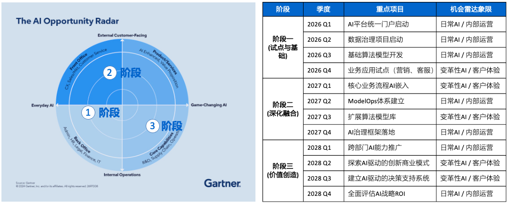
- 平台建设方面：已自研AI门户/智能体入口，基于开源模型和本地服务器形成私有化能力底座，工具平台可封装MCP/API工具，支持绑定微信或工作台入口、生成文档、调用文件和监控日志。
- 知识库建设方面：已覆盖人力资源、财务、研究院、质量中心、OA/企业制度、家用等部分业务域，主要用于制度问答、流程查询、标准文件检索、测试报告提取和部门级知识问答；知识库通过脚本定时采集文件，经清洗、格式转换和向量化/索引处理后入库。
- 平台开放方面：目前主要有数字化团队AI顾问负责AI应用开发，同时已向小部分业务用户开放开发权限；当前仍处于小范围内测和逐步开放阶段。
- 业务应用方面：当前业务侧使用较多的是通用问答、文件检索、思维导图生成、文档分析和标准文件查询。
- 业务场景探索方面：已识别供应链分析、营销及销售数据分析、财务数据分析、生产数据查询、研发领域标准文件查询等与SAP ERP强相关的潜在应用场景。
- AI后续规划
- 当前规划在2025年党委会汇报，规划中包括应用建设和算力建设，均分阶段推进，其中一期以通用能力和基础平台为主，包括知识库、问答、算力、日志和基础工具；二期可复用试点能力到更多部门；三期适合切入供应链、电商、成本、财务等垂直场景。
- 一期AI应用推进基本顺利，大部分一期规划已经实现。少部分有调整及延期，主要原因包括项目周期拉长、领导关注重点变化以及基础数据条件不足。
6.2建设收益与特点总结：
回顾2008年至2025年的数字化建设历程，佛山照明历经近二十年的持续投入与迭代，完成了从核心ERP奠基到局部业务协同，再到合规底座夯实的演进。整体建设收益主要体现在以下三个维度的历史性跨越：
- 核心管理层面：从“手工账本”到部分“线上集中”的跨越
以2008年上线SAP ECC系统为起点，企业逐步构建起集团级的核心管控体系，实现了管理模式的根本性转变。
- 业财一体化根基： 通过SAP系统，固化了财务、供应链、生产计划等核心管理流程，实现了业务数据与财务数据的初步集成，结束了核心业务依赖手工账本和离线表格的历史，为集团化管控提供了基础支撑。
- 流程标准化起步： 建立了统一的财务核算体系和物料管理体系，虽然随着业务发展出现了新的断点，但核心主数据的标准化工作在当时为企业的规模化扩张奠定了基础。
- 业务执行层面：从“黑盒作业”到“局部透明”的跨越
针对车间执行、研发协同和采购寻源等曾经的“黑盒”领域，企业通过持续补强，实现了关键环节的数字化覆盖与透明化管理。
- 研产协同打通： 通过引入PLM系统并与SAP对接，首次在研发设计—生产制造间架起了数据桥梁，规范了BOM管理，减少了设计变更带来的生产混乱。
- 生产透明化： 通过SMT标杆线MES及数字车间建设，将生产执行与质量管控下沉至机台级，实现了从“管结果”到“管过程”的转变，填补了车间执行层的数据空白。
- 供应链协同： 实施SRM系统，实现了供应商寻源与订单协同的线上化，提升了采购效率。
3. 基础设施与合规层面：从“粗放运行”到“安全合规”的跨越
响应国资监管要求及企业安全需求，企业在基础设施和合规体系建设上取得了显著突破，筑牢了数字化底座。
- 财务合规与共享： 搭建财务共享平台与司库系统，实现了资金与核算的集约化管理，满足了国资监管对财务数智化的硬性要求。
- 安全与基础设施升级： 通过网络安全建设、超融合平台及电子签章、档案系统的应用，显著增强了基础设施的安全性与弹性，实现了核心数据的加密保护与无纸化办公，为业务连续性提供了可靠保障。
6.3数字化演进历程总结
纵观2025年之前的数字化发展历程，企业整体呈现出“从职能覆盖走向价值链穿透、从分散建设走向局部协同、从脆弱可用走向安全可靠”的演进特征。
- 早期阶段：企业主要解决“从无到有”的问题，以SAP ECC系统为核心实现了业务管理及运营的线上化，但车间执行层存在空白，数字化仅作为“记录型工具”。
- 深化期（2021-2025年）：企业首次引入数字孪生等新技术，实现了从“管结果”到“管过程”、从“单系统”到局部“点对点连通”的多重跨越。
然而，从过往历程及同行业发展经验来看，企业当前的数字化建设及运维仍存在以下典型不足：
- 缺少全局性数字化顶层规划。各单元“各自为战”，项目衔接松散、重复投资，系统合力不足。
- 数据治理严重滞后。物料、供应商等编码不统一，无法做到“一物一码”、“一户一码”，导致系统集成效果大打折扣。
- 建设模式偏向“项目式”而非“平台式”。缺乏统一技术底座与集成标准，存在从“信息孤岛”演变为“接口蜘蛛网”的新风险。
- 安全建设“重设备堆叠、轻持续运营”。运维能力未同步跟上，缺乏统一常态化运维团队。
- 数据应用层次较浅。系统功能普遍停留在数据录入与存储层面，缺乏深度分析与决策支持能力，尚未真正转化为业务洞察。
- 组织保障不足。业务部门参与有限，缺乏数智化复合型人才。
归根结底，缺少一张覆盖全集团、长周期的数字化蓝图规划，是导致上述问题的共同根源。
数字化系统现状描述
7.12026年数字化在用应用系统架构
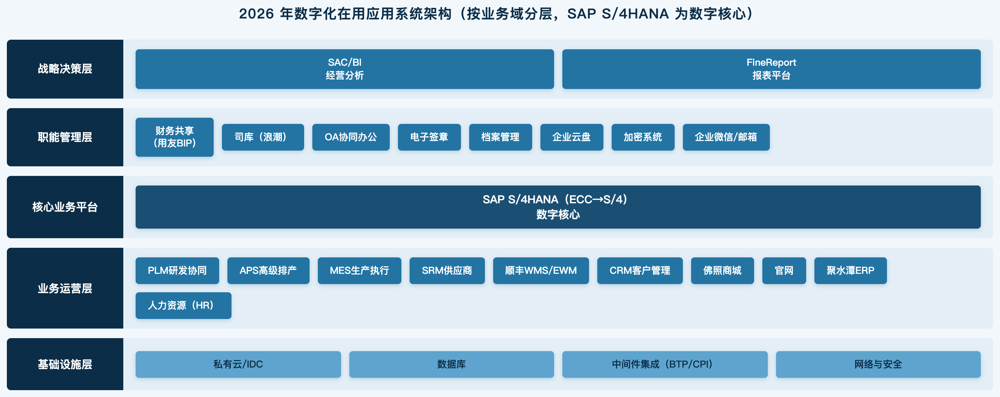
7.2系统集成架构分析
此版本的集成架构图主要以SAP ERP 为视角进行梳理，下一版本会在此基础上增加其他系统间集成关系。
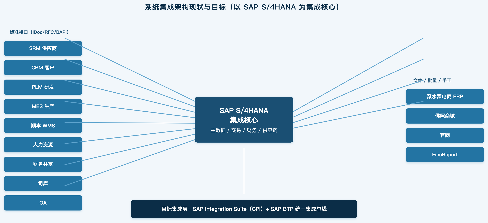
数据治理现状描述
8.1执行摘要
本章节内容基于《佛山照明数据调研分析报告》进行梳理，内容关注于对数字化规划有影响的数据治理的现状及痛点。详细数据治理现状请参考《佛山照明数据调研分析报告》。
经过项目初步评估发现公司数据治理整体处于DCMM L2（受管理级）向L3（稳健级）过渡阶段。核心风险在于物料与BOM的唯一性及版本管理不足、工艺路线关键参数缺失、客商主数据多入口维护、财务与组织维度映射混乱，这些问题严重制约了计划、采购、生产、成本核算的准确性，并构成S/4 HANA平滑迁移的潜在风险。
数据问题的根源并非单纯技术问题，而是管理制度、组织保障、业务流程与系统支撑等多方面因素交织的结果。必须利用此次系统升级的窗口，同步启动“标准—流程—平台—质量—运营”的长期治理机制建设，避免历史问题在后续的数字化转型过程中重演。
8.2物料主数据（现状及痛点）
物料主数据作为连接各业务环节的核心，当前面临严峻挑战。首先，一物多码与编码冗余现象普遍，由于缺乏统一的归口审核机制，研发、生产、采购等环节各自为政，导致同一物料存在多个编码，直接引发库存积压与采购成本上升。其次，属性管理与颗粒度不足，系统难以结构化地管理同一规格下不同制造商、不同价格的复杂关系，多依赖文本备注，影响精细化采购与成本管理。再次，视图完整性差，SAP ERP 系统中物料主数据的MRP、采购、会计等关键视图的字段缺失严重，导致计划参数不准、财务核算困难。最后，全生命周期管理缺失，物料从创建到停用的状态变更缺乏闭环管理，大量历史停用物料（占比约54%）未被有效归档，存在被误用的风险。
8.3BOM（物料清单）主数据（现状及痛点）
BOM数据的完整性、一致性和可追溯性是保障生产与计划的基础，但目前存在显著短板。EBOM（工程）到MBOM（制造）的转换缺乏标准，研发与制造端的BOM结构不统一，设计变更无法及时、准确地传递至生产端，易导致停线待料。同时，版本管理与ECN（工程变更通知）流程不规范，大量BOM记录缺少生效日期和变更号，无法追溯历史版本，新旧结构混淆风险高。此外，BOM数据质量直接制约了APS（高级计划排程）等系统的应用，MRP运算失真，导致缺料或积压。跨系统（PLM、SAP、MES）的BOM数据一致性也缺乏有效的保障措施和自动校验机制。
8.4工艺路线主数据（现状及痛点）
工艺路线是连接设计与制造的桥梁，但当前存在明显的“断桥”现象。PLM与ERP/MES系统间工艺数据未打通，PLM中未启用工艺路线管理功能，而SAP中的工艺路线定义过于粗放，仅能满足最基本的财务成本归集，无法支撑精细化的工序级排产。部分事业部（如车灯）在MES中独立维护工艺路线，但未与SAP ERP打通。这种工艺数据的缺失与不一致，导致标准工时、产能负荷等关键参数不准，工程变更也无法实时同步，严重影响了生产计划的准确性和执行效率。
8.5客户与供应商主数据（现状及痛点）
客商主数据管理存在“数出多源”和“一户多码”的核心问题。客户主数据在CRM、SAP、电商平台等多个系统独立维护，缺乏统一的“黄金记录”权威来源，导致同一客户存在多个编码，严重影响销售份额统计和财务对账效率，且客户信用管理功能未有效启用。供应商主数据同样在SRM和SAP中存在多个维护入口，同一供应商因不同采购组织或法人实体被重复创建编码，削弱了集团的集中采购议价能力。此外，供应商的银行信息、状态等关键字段也存在缺失或维护不一致的情况。
8.6财务与组织主数据（现状及痛点）
财务主数据是集团化合并与管理分析的基石，但当前架构难以支撑精细化核算与高效合并。核算维度固化，现有科目体系无法灵活支持按渠道、事业部等多维度的盈利分析。利润中心应用严重缺失，全集团仅定义了2个且未实际使用，导致无法进行事业部级盈利能力分析。成本中心存在大量失效记录（停用率23%），且各法人编码规则不统一。在组织架构层面，19个法人实体的科目表、利润中心等财务维度未实现集团级统一，内部交易伙伴字段维护不全，导致集团合并报表需大量手工调整，结账周期长达15个工作日。
8.7主数据质量问题原因分析
综合来看，数据质量问题的根源是系统性的。首先，管理制度与组织保障缺失，缺乏企业级的数据治理委员会和明确的数据所有者制度，导致“谁都在用，但没人负责”。其次，业务流程与数据标准脱节，数据标准未前置嵌入业务流程，系统建设“重功能、轻数据”，导致数据在源头就产生混乱。再次，系统支撑与技术架构老化，各系统间“点对点”接口繁多，形成“接口蜘蛛网”，且缺乏统一的主数据管理平台（MDM），数据权威来源不清，跨系统同步困难。最后，历史数据包袱沉重，长期的“重建设、轻运营”积累了大量冗余、错误数据，若不进行系统性清洗，将直接阻碍新系统的价值发挥。
高价值业务专项咨询方案识别（S01–S23）
通过前期调研、项目组讨论及飞书专题台账对齐，目前识别出23个高价值业务专项方案（S01–S23），覆盖销售、财务、采购、生产、质量、数据治理等关键领域，作为后续企业架构设计与实施路径规划的候选池。最终专项方案范围会经过管理层汇报进行明确。
| 序号 | 专题编号 | 高价值业务场景 | 实施排期 | 负责人 | 简介 |
|---|---|---|---|---|---|
| 1 | S01 | 物料主数据治理 | 一期 | 班家亮 | 统一物料主数据标准与编码体系，解决一物多码、数据不一致问题，夯实数字化底座。 |
| 2 | S02 | 客户信用管理提升方案 | 一期/二期 | 陈朝晖 | 建立客户信用评估与额度管控机制，SAP标准信用叠加二期特殊需求开发，降低赊销风险。 |
| 3 | S03 | 跨公司转卖模式优化 | 一期 | 陈朝晖 | 优化集团内跨公司转卖业务模式与交易流程，提升内部协同与结算效率。 |
| 4 | S04 | 销售订单全链路跟踪与交期预警 | 二期 | 陈朝晖 | 实现销售订单从接单到交付的全链路可视化与交期预警，提升履约准时率。 |
| 5 | S05 | 销售价格体系优化 | 二期 | 陈朝晖 | 构建统一销售价格体系与审批管控，规范定价、折扣与促销管理。 |
| 6 | S06 | 海外财务体系合规建设 | 一期 | 陈宇清 | 建立多语言、多货币海外财务合规体系，支撑泰国等海外工厂运营。 |
| 7 | S07 | 制造成本还原方案 | 一期/二期 | 郭裕 | 还原制造成本到法人/集团多维视图，一期核算+视图，二期还原报表系列。 |
| 8 | S08 | 财务组织架构、科目等主数据治理 | 一期 | 郭裕 | 治理财务组织与会计科目主数据，会计科目由1800+精简至600，统一核算口径。 |
| 9 | S09 | 应收清账和财务共享 BIP 接口 | 一期 | 郭裕 | 优化应收清账流程并打通财务共享 BIP 接口，提升资金回笼与对账效率。 |
| 10 | S10 | 集团法定合并报表建设 | 一期/二期 | 郭裕 | 实现集团法定合并报表自动抵消与出具，从手工底稿升级至系统自动化。 |
| 11 | S11 | 按客户销售项目核算和分析方案 | 一期 | 郭裕 | 建立按客户/销售项目的获利核算与分析，支撑项目级经营决策。 |
| 12 | S12 | 研发投入产出分析体系建设 | 一期 | 郭裕 | 构建研发投入产出分析体系，量化研发效益与产出。 |
| 13 | S13 | 供应商交期与供应商绩效管理 | 一期/二期 | 于海波 | 优化 SRM 与 SAP 交期同步及供应商绩效管理机制，提升供应保障能力。 |
| 14 | S14 | 采购价格透明化与比价分析体系 | 一期/二期 | 于海波 | 建立采购价格透明化与比价分析，提升采购议价与降本能力。 |
| 15 | S15 | 采购配额管理与订单分配智能化 | 一期 | 于海波 | 实现采购配额管理与订单智能分配，优化供应商资源配置。 |
| 16 | S16 | 产前齐套性预警与跟踪 | 一期 | 杨晓超 | 建立产前齐套性预警与跟踪机制，保障生产开工齐套率。 |
| 17 | S17 | 库存可视化与多维度查询体系 | 一期 | 于海波 | 构建库存可视化与多维度查询体系，提升库存透明度（优先级低）。 |
| 18 | S18 | 主生产计划建设专题 | 一期 | 杨晓超 | 建设 MTS+MTO 结合的主生产计划（MPS），统筹产销平衡。 |
| 19 | S19 | MRP 物料需求计划建设 | 一期 | 杨晓超 | 建设 MRP 物料需求计划，依赖 BOM 完善实现物料自动需求计算。 |
| 20 | S20 | 生产进度看板建设 | 二期 | 杨晓超 | 建设生产进度看板，对比计划与实际产出，提升生产透明度。 |
| 21 | S21 | 质量追溯建设专题 | 二期 | 杨晓超 | 建设质量追溯体系，实现产品全生命周期质量可追溯。 |
| 22 | S22 | QM 质量合格率统计分析建设专题 | 二期 | 杨晓超 | 建设 QM 质量合格率统计分析，支撑质量持续改进。 |
| 23 | S23 | BOM 产品全生命周期高效建设专题 | 一期/二期 | 杨晓超 | 建设 BOM 产品全生命周期管理，MBOM 在 PLM 搭建、ECN 用 SAP 标准功能。 |
核心痛点清单
10.1需求总览摘要
- 需求总量：共 701 条（2026 年全量需求库定稿口径）（编号 A0001-A0701）。
- 涉及部门：覆盖 29 个核心业务单元，包括财务管理部、国际事业部、家用/商用/车灯事业部、招投标中心、电商事业部、高明生产运营中心、研究院等。
- 优先级分布：高优先级 180 条（占比 32%），中优先级 216 条，待定 ⬜ 116 条，低优先级 43 条。高优先级与中优先级占据了绝对主导地位，合计占比超过 71%，这表明企业当前的数字化诉求非常迫切，且大量集中在解决核心业务痛点和提升运营效率上。
- 高优先级（180条）：主要集中在“市场营销与销售”、“财务管理”和“供应链与采购”。这反映了企业对业财一体化和前端市场响应速度的极致追求。
- 中优先级（216条）：广泛分布于各价值链环节，尤其是“市场营销与销售”和“质量管理”，体现了对业务流程精细化管控的需求。
- 空白/未分类（116条）：主要集中在“供应链与采购”（61条）和“交付与服务”（26条），说明这些领域的数字化现状较为模糊，或存在大量尚未明确定义的长尾需求，是未来规划的潜力挖掘区。
- 核心关注业务领域：
- 市场营销与销售（133 条）：聚焦价格体系、订单自动化及渠道协同。
- 供应链与采购（98 条）：SRM 与 SAP 的深度集成与流程优化。
- 集团财务管控（55 条）：成本还原、业财一体化及合规性管理。
- 项目范围：
- 本次SAP S/4 HANA 升级可以满足的需求247条，占总需求的45%，也突显出SAP ERP 及 MDG 系统在佛照数字化转型的核心地位。
- 本地数字化规划相关的需求63条，基本上分布在其他核心应用系统，如CRM，SRM，PLM，WMS以及多系统集成。
本章节内容仅列出部分有代表性内容，详细情况请参考问题清单。
高频关键词 Top：订单(84)、系统(73)、SAP(69)、报表(63)、物料(55)、数据(46)、自动(41)、采购(36)、价格(32)、销售(29)、生产(28)、流程(28)、SRM(26)。共性主题高度集中于采购供应链、报表与数据分析、流程自动化、主数据治理四大方向，与四大维度深度分析（管理 / 流程 / 系统 / 数据层面痛点）相互印证。
10.2需求全景：701 条全量深度分析（V3 新增）
10.2.1三桶分流结果（701 条全量处置框架）［F］
10.2.2桶2 内部规划类型（195 条）［F/I］
| 分流桶 | 条数 | 占比 | 归宿 | 说明 |
|---|---|---|---|---|
| 桶1 本期 SAP 实施 | 354 | 50% | 交付物1-3 + 4.x | 归入 S01–S16 专题，进本期上线关键路径 |
| 桶2 未来数字化规划 | 195 | 28% | 交付物6 路径规划 | 二期/三期 SAP + 非 SAP 数字化，按时序排布 |
| 桶3 管理需求（移出） | 106 | 15% | 不进数字化 | HR / OA / 法务 / 行政 / 已拒绝 |
| 桶4 待定界 | 46 | 7% | 需评审 | 范围/系统不明，一轮定界收口 |
10.2.3优先级与复杂度分布［F］
| 222 条原无专题归属需求经规则分流［F］：94 条抢救回本期 SAP（漏标专题的真 SAP 需求，带 ME51N / COOIS / CS02 等事务码）、69 条判管理需求、35 条进规划池、24 条待定界。逐条回填建议已沉淀至《需求回填建议_222条》清单，可直接对照回填需求库。 |
|---|
10.2.4业务模块分布 Top（按问题领域）［F］
| 本期核心交付压力：本期范围 + 高优先级（P0）需求共 75 条，是本期必须重点保障的交付体量；复杂度未评定高达 43.4%，高复杂度 104 条需重点投入资源。 |
|---|
10.2.5提出部门 Top（反映改善重心）［F］
| 业务模块 | 条数 | 业务模块 | 条数 |
|---|---|---|---|
| 销售与渠道管理 | 117 | 生产制造管理 | 18 |
| 财务与资金管理 | 76 | 人力资源管理 | 17 |
| 采购与供应商管理 | 69 | 综合行政与协同办公 | 17 |
| 信息技术与系统架构 | 45 | 数据分析与经营决策 | 16 |
| 仓储物流与库存管理 | 45 | 客户服务与售后管理 | 12 |
| 研发与产品管理 | 33 | 主数据与基础数据管理 | 11 |
| 计划与产供销协同 | 29 | 战略投资与项目管理 | 9 |
| 质量管理 | 28 | 风险法务与合规管理 | 9 |
10.2.6系统归属与 SAP 模块［F］
| 提出部门 | 条数 | 提出部门 | 条数 |
|---|---|---|---|
| 财务管理部 | 85 | 车灯事业部 | 27 |
| 国际事业部（佛照光电） | 67 | 研究院 | 25 |
| 家用事业部 | 55 | 办公室（党委办、维稳办） | 25 |
| 招投标中心 | 42 | 线路板车间 | 20 |
| 高明仓库 | 38 | 数智化部 | 19 |
| 商用事业部（智城科技） | 34 | 法律与风控事务部 | 19 |
| 电商事业部 | 33 | 高明生产运营中心 | 32 |
| 质量与客服中心 | 31 |
10.2.7共性需求主题 Top（基于关键词组匹配）［F］
关键判断：
系统归属与 SAP 模块分布：
| 系统归属（归类） | 条数 | 占比 | 主要 SAP 模块 | 条数 |
|---|---|---|---|---|
| SAP 核心 | 448 | 63.8% | MM 物料管理 | 189 |
| 周边 / 非 SAP 系统 | 195 | 27.8% | SD 销售与分销 | 177 |
| 未标明 | 59 | 8.4% | 非 SAP（SRM/OA/CRM 等） | 89 |
| PP 生产计划 | 80 | |||
| FICO 财务成本 | 69 | |||
| QM 质量管理 | 35 |
优先级与复杂度分布：
| 优先级 | 条数 | 占比 | 复杂度 | 条数 | 占比 |
|---|---|---|---|---|---|
| 高（P0） | 190 | 27.1% | 高 | 104 | 14.8% |
| 中（P1） | 220 | 31.3% | 中 | 208 | 29.6% |
| 低（P2） | 43 | 6.1% | 低 | 81 | 11.5% |
| 待定 | 116 | 16.5% | 未评定 | 305 | 43.4% |
| 未评定 | 133 | 18.9% | 异常 | 2 | 0.3% |
桶 2 内部规划类型分布：
| 规划类型 | 条数 | 路径规划时序建议 |
|---|---|---|
| 二期 SAP（优先） | 51 | 紧接本期上线，作二期首批 |
| 二期 SAP | 102 | 二期主体 |
| 三期 SAP（观察） | 4 | 三期候选，观察触发条件 |
| 非 SAP 数字化 | 38 | AI / 商城 / BI / CRM / PLM / 物流 / WMS 等外围系统 |
共性需求主题 Top（基于关键词组匹配）：
| 共性主题 | 涉及条数 | 关联关键词 |
|---|---|---|
| 采购与供应链 | 151 | 采购、供应商、SRM、招标、合同、询价、比价 |
| 报表与数据分析 | 139 | 报表、BI、分析、看板、驾驶舱、预警 |
| 流程自动化与效率 | 84 | 流程、自动化、无纸化、协同、机器人 |
| 主数据治理 | 62 | 主数据、物料、编码、MDG、客商、数据标准 |
| 生产与制造 | 55 | 生产、工单、排产、BOM、工艺、产能 |
| 财务与成本资金 | 53 | 成本、资金、核算、凭证、收款、预算、费控 |
| 系统集成与接口 | 43 | 接口、集成、同步、打通、EDI、互联 |
| 仓储物流与库存 | 32 | 库存、仓储、出入库、盘点、发运、货位 |
| 审批与权限 | 31 | 审批、权限、角色、授权、电子签章 |
各业务模块需求数量 Top（701条）：销售与渠道管理 117 条、财务与资金管理 76 条、采购与供应商管理 69 条为需求最密集三大业务域
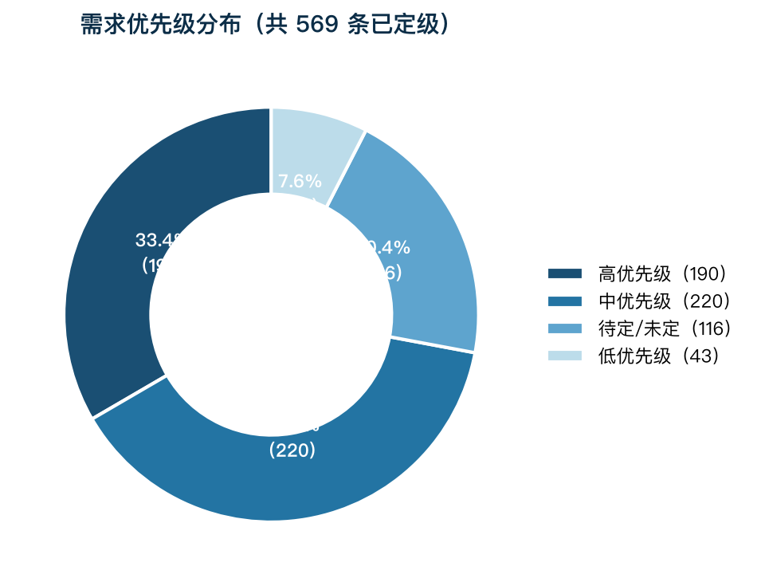
三桶分流示意图（701条）：桶1 本期SAP实施 354 条 / 桶2 未来数字化规划 195 条 / 桶3 管理需求 106 条 / 桶5 待定界 46 条
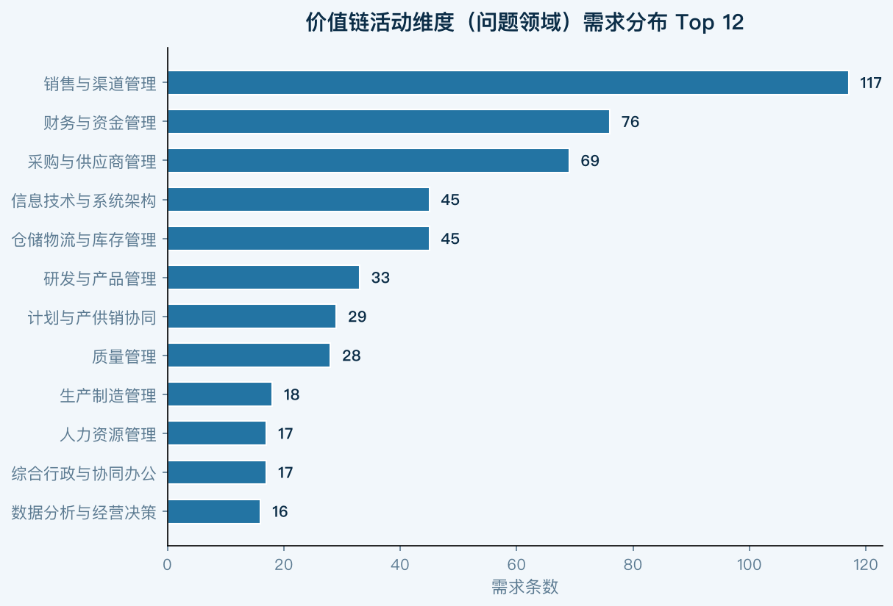
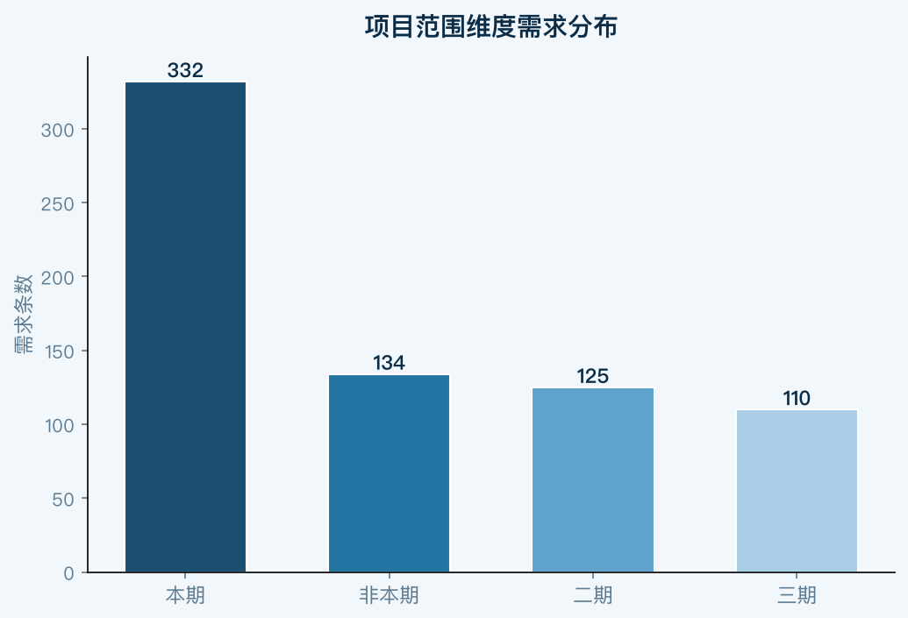
注：本报告需求总量统一采用探索阶段 V5 需求库定稿口径 701 条（2026 年全量），为当前最新权威口径。
本节基于探索阶段需求库 V5 全量数据（2026年 701 条 + 2025年 175 条 = 两轮合计 876 条）做系统性量化拆解。所有数字均为对需求库的真实统计；占比基准为 2026 年全量 701 条（分析提取原始 CSV 为 702 行，差异 1 条为空白/重复行，已按 701 口径统一定稿，记为［F］）。下方三桶分流为需求处置的核心框架，已作为后续专项方案（S01–S16）与路径规划（交付物6）的范围基线。
10.3系统升级类（61条，35%）
【P1】MRP无法正常运行，生产计划完全依赖手工：原因：BOM维护不及时、手工提前下采购计划、过期数据未清理。影响：仅2024年采购订单31万条、销售订单110万条，手工处理效率极低。
【P1】泰国本位币（泰铢）记账及税制报表系统不支持：泰国工厂已启动运营，ECC无法支持泰国版本，直接影响子公司合规运营，是最紧迫的升级驱动。
【P1】SAP ECC系统性能严重老化：物料账需7-8小时，关单需2-3小时，系统已出现程序异常导致财务数据出错，ECC主流维护期结束，安全漏洞无补丁支持。
【P1】信用管理功能未启用，应收管控缺失：仅通过台账方式进行线下管理，无法按客户+公司+渠道级别管控信用额度，销售预测准确率仅30-40%。
【P2】SAP/WMS/MES系统集成不完全，库存数据不准确：WMS与SAP库存同步存在时间差，受预开发票、不同地域仓储系统不同等因素影响，无法提供完全准确的库存报表。
【P2】定价与SAP集成缺失，OA审批结果无法自动传输：产品定价/售价需通过OA审批两次（定价流程+售价流程），审批完成后需手工维护SAP，流程效率极低（7-8天）。
【P2】项目型制造业务场景无系统支撑：航信公司（航空照明）、沪乐公司（船舶照明）、工程照明等项目型业务无法按项目阶段进行收入、成本管理和库存追溯。
【P2】合并报表系统外手工操作，多子公司财务管控缺失：19家法人合并须系统外手工做抵消，各子公司系统不统一，无法实现集团统一财务管控。
10.4数据优化类（34条，19%）
【P1】物料主数据缺乏统一归口管理，多头维护乱象：各业务部门（研究院、出口事业部、车灯事业部、分子公司）可自主创建物料编码，无跨部门审核机制，导致一物多码、分类不规范、视图不完整等问题。
【P1】物料编码无分类特性，数据分析失真：物料描述中混合了规格、色温等属性，未启用分类特性（Class/Characteristic），导致按维度统计分析无法实现，成本分类分析失真。
【P1】客户编码规则不规范，存在一客多码：客户分类/分级数据不完整，无法满足业务统计分析需求，渠道管理和信用管控的数据基础薄弱。
【P2】指标统计口径不一致，管理考核数据失真：集团考核指标全部依赖手工Excel，每季度口径不同，指标分类标准不统一（如产品系列划分标准不统一），决策支持能力极弱。
【P2】质量追溯链路断开，批次管理未全面覆盖：缺少物料批次控制，分布在各业务环节的质量数据无法串联。IQC与IPQC过程检验脱节，供应商合格率无法真实体现。
【P2】财务科目体系各法人差异大，集团统一管理缺失：各子公司科目体系差异显著，利润中心未启用，成本中心体系不统一，无法支撑按事业部的管理指标统计和绩效考核。
10.5管理提升类（29条，17%）
【P1】成本核算粗放，标准成本依赖系统外手工估算：标准价通过OA流程线下定价直接给入，SAP成本估算功能形同虚设，无法进行科学的成本加成报价和成本弹性分析，影响产品定价决策。
【P1】经销商库存不透明，渠道管理风险高：经销商库存仅靠人工月度上报，无实时可视化，存在串货风险。勤策CRM与经销商进销存系统不关联，渠道管控手段薄弱。
【P2】生产计划与销售预测责任不清，库存积压与缺货并存：各事业部销售预测与库存责任不分，旺季抢货、淡季积压。产销协调机制缺乏系统支撑，库存周转天数109天（欧普71天）。
【P2】质量缺陷代码标准化体系缺失，质量成本无法量化：质量缺陷无标准分类代码，缺乏质量成本统计手段，无法量化质量问题对成本的影响，质量KPI体系不完善。
10.6流程改善类（19条，11%）
【P2】设计BOM到制造BOM转换完全依赖手工，时效滞后：研究院在PLM维护EBOM，生产基地手工在ERP转MBOM，两系统间无自动化集成，导致BOM不一致、计划失效。
【P2】需求计划传递依靠OA或纸质下发，流程和数据不连通：事业部需求计划下发通过OA/纸质方式，生产运营中心无法在系统中及时获取和处理，产供销协同存在严重断点。
【P3】客户新增和变更流程不规范：客户主数据创建无标准流程，缺乏审核机制，导致客户编码质量差，影响后续信用管理和应收对账。
【P3】研发费用核算粗放，高新资质认定存在风险：试产订单未与常规生产订单分开，研发费用只能从制造费用粗略划转，导致放弃研发费用加计抵扣优惠，影响高新技术企业认定。
10.7新增车灯业务专项
【P1】车灯业务标准成本月末差异失控，产成品估值严重失真：车灯事业部调研揭示：月末在制品/产成品库存量较少时，整张生产订单的标准成本差异全部结转至剩余库存，导致库存价格异常波动，财务报表中车灯业务毛利率出现不真实的极端值。根本原因是标准成本设定未区分研发试制成本与量产成本，且批量结算策略（订单级平摊）缺乏合理保护逻辑。S/4HANA 升级后需在蓝图阶段同步设计车灯业务成本对象结构（按订单类型分类：NP/量产/试制/VMI），并启用实际成本分类账（Actual Costing Ledger）对齐真实成本。
【P2】车灯 VMI 业务场景 SAP 未覆盖，供应商寄售库存管理盲区：车灯事业部存在少量 VMI（供应商寄售）业务，当前均按普通采购处理，无法体现寄售库存的所有权归属及资金占用真实情况。S/4HANA 中需启用寄售特殊库存功能，支持 VMI 库存独立核算与自动转移记账。
10.8新业务与战略管控专项
【P1】新业务拓展中心完全在 SAP 体系外运作，无法支撑新赛道规模化：新业务拓展中心（适老照明、植物种植、动物养殖赛道）成立超过一年，全部合同审批在 OA 处理，与 SAP 完全不对接。新业务订单、采购、成本无法在 ERP 中追踪，15年规划目标5千万收入缺乏系统支撑。业务负责人明确指出："第一年先把数据统一，第二年再上线新东西；如果不好用，还不如不上。" S/4HANA 项目需在标准配置中为新业务预留独立利润中心和项目成本对象，支持低入场门槛的接入路径。
【P2】董事会投资管理与 SAP 完全割裂，投资后评价无数据基础：董事办公室访谈揭示：公司每年 8-9 个内部投资项目，当前无系统化数据支持投资分析和后评价。财务部导出高明产值数据需1周，加工整理需半月，严重滞后于决策需求。SAP 集团报告（Group Reporting）+ 利润中心体系建设是解决该问题的根本路径，建议纳入蓝图设计优先级。
【P2】IT 预算评估缺乏标准，数字化投资 ROI 无法量化：董事办公室访谈指出：每次开党委会领导头疼如何评估 IT 预算合理性，当前由审计部委托外部咨询公司做公允价值评估再公开招标。缺乏内部 IT 投资管理框架和 ROI 量化工具，导致数字化项目立项效率低、说服力弱。建议在 S/4HANA 项目中同步建立数字化投资管理台账，并在上线后引入 SAP 内嵌分析进行投资回报追踪。
【V2 补充】V2补充：缺货率30%-40%是MRP/计划体系失效的量化佐证——N+2滚动月度计划已在家用/商用事业部开始试点（2026年初），但全集团MRP系统性运行尚未建立，专职MRP控制者岗位缺失。供应链与采购共收集需求98条（位列第二），MPS/MRP专项方案是本次S/4HANA实施的核心交付物之一，目标将缺货率降至10%以内。
10.9四大维度深度分析（痛点溯源）
10.9.1管理层面痛点：风控合规弱与绩效量化难
深度理解： 管理维度的痛点在于“事后补救多于事前预防”。信用管控、合同履约等关键环节缺乏系统级硬约束，导致经营风险累积。同时，由于数据分散，研发产出、供应商交付、质量损失等关键绩效指标（KPI）难以实现自动化量化考核。
具体需求支撑：
- 风控合规漏洞：
- 信用管控缺失：仅在出库环节拦截信用，下单环节不校验，导致虚开订单锁定库存和额度（需求 A0262）。
- 合同履约失控：法务端无法实时获取付款进度，难以识别超付风险，缺乏全生命周期闭环管控（需求 A0243, A0250）。
- 价格管理失控：同一物料不同部门维护价格，且缺乏对长期无效价格的自动冻结机制（需求 A0199, A0198）。
- 绩效考核困难：
- 研发产出难衡量：二级项目研发费用归集靠人工，无法自动关联项目收益，投入产出比无法量化（需求 A0172, A0257）。
- 供应商考核人工化：交付率、质量数据需人工核算，缺乏系统自动抓取生成考核报表的机制（需求 A0007, A0215）。
- 质量绩效无数据：不良品成本未单独核算，仅考核不良率而无财务损失数据（需求 A0260）。
10.9.2流程层面痛点：端到端割裂与线下作业冗余
深度理解： 流程层面的核心问题是“部门墙”导致的流程断裂。业务流在跨越部门边界（如研发到采购、销售到财务）时，往往退化为线下沟通、手工台账和重复审批，严重影响了端到端的流转效率。
具体需求支撑：
- 流程断点与线下作业：
- 采购到付款（P2P）断点：SRM 存储发票，但 SAP 应付校验无附件查看功能，财务需线下翻阅纸质资料（需求 A0008）。
- 销售到收款（O2C）断点：OA 订单与 SAP 不关联，成品车间收到订单不能直接分解 BOM，计划物料分解耗时长（需求 A0013）。
- 废品管理线下化：资源回收废品管理依赖人工线下登记，未在 SAP 实现全流程闭环，存在资产流失风险（需求 A0051）。
- 冗余审批与操作：
- 财务审批繁琐：财务申请、预付款、报销三个流程需领导依次审批，建议合并或形成闭环（需求 A0079）。
- 供应商引入复杂：SRM 引入流程过于复杂，调查表更新机制僵化，不适应敏捷供应链需求（需求 A0236, A0232）。
10.9.3系统层面痛点：集成断点与性能瓶颈
深度理解： 当前的系统架构呈现“烟囱式”特征，SAP 作为核心交易后台，与 SRM、PLM、OA、WMS 等外围系统之间存在大量数据交互断点。用户被迫在多个系统间切换，且由于接口同步延迟或逻辑缺失，导致业务流无法闭环。
具体需求支撑：
- 跨系统集成失效：
- PLM 与 SAP 脱节：研发 BOM 变更无法实时同步至生产端，导致设计与制造“两张皮”（需求 A0014, A0183）。
- OA 与 SAP 割裂：OA 审批后的订单无法自动触发 SAP 生产计划分解，需人工二次录入（需求 A0012, A0032）。
- SRM 协同滞后：采购订单、送货单在 SRM 与 SAP 间同步不及时，影响供应商送货准确性（需求 A0126, A0132）。
- 自动化能力不足：
- 物流运费结算：缺乏根据城市、重量自动匹配费率的引擎，依赖人工核算（需求 A0056）。
- 凭证自动生成：质量判退等业务发生后，缺乏自动触发财务凭证生成的机制（需求 A0052）。
- 系统体验与性能：
- 高并发卡顿：自营订单自动交货程序在处理大订单时频繁超时，无法满足电商业务需求（需求 A0154, A0157）。
- 界面交互繁琐：SAP 查询界面缺乏引导，缺少单点登录和一键跳转功能（需求 A0184, A0190）。
10.9.4数据层面痛点：主数据混乱与价值挖掘缺失
深度理解： 数据治理的滞后是制约数字化的核心瓶颈。主数据标准不统一（如物料描述、新品定义）导致跨部门统计口径冲突；同时，数据停留在“记录”阶段，缺乏穿透式查询和可视化分析能力，管理层难以通过实时数据洞察经营全貌。
具体需求支撑：
- 主数据标准不一：
- “新品”定义模糊：各部门认定标准（高新项目时间、首次下单时间）不一致，导致销售统计需人工甄别（需求 A0170）。
- 物料描述不规范：历史物料格式混乱，存在“一码多物”现象，严重影响库存准确性（需求 A0039, A0187）。
- 数据透明度与可视化缺失：
- 成本数据黑盒：无法实现成本穿透式查询，难以逐层追溯材料成本及对应供应商最新采购价（需求 A0253）。
- 库存状态不可视：电商业务无法在一个界面清晰看到产品在聚水潭、调货中、质检中等全链路状态（需求 A0135）。
- 报表分析滞后：SAP 销量与新品更新存在滞后性，无法反映实时库存水位，误导采购决策（需求 A0128）。
10.10数字化需求分析核心启发：
- 通过对 701 条需求的全面梳理，我们需明确本期项目作为佛照数字化转型根基的战略地位。项目将围绕 SAP S/4 HANA 与 MDG 构建核心底座，借力 SAP CPI 集成平台，打通 SAP 与外围系统的‘任督二脉’，让业务数据在企业内部自由流动、高效赋能。
- 同时，针对未纳入本期SAP S/4 HANA升级范围的高、中优先级需求，需进行统筹规划并明确后续实施路径，以确保端到端数字化价值链的完整性与协同性。
行业对标
为更好的设计数字化转型路径，我们选取了与佛照同行业的3家上市公司，进行横向的对标分析，为佛照数字化转型规划提供重要的参考。
| 公司 | 对标维度 | 数字化举措描述 |
|---|---|---|
| 公牛集团 | 组织 | 吸纳学习华为数字化治理方法与实践实现流程再造和管理变革，支撑公司数字化转型全面发展，最终完成从职能型组织向流程型组织转变。 |
| 公牛集团 | 技术 | 依托未来研究院对前瞻技术进行规划，在新能源用电、数字化智能控制、AI产业应用等领域与一流高校合作。2025年新增授权专利414项。 |
| 公牛集团 | 数据 | 通过全面升级MES系统，整合ERP、QMS、PLM等软硬件体系，实现了‘设计制造一体化、生产加工自动化、生产过程透明化、物流控制精准化’的数字化全过程信息监控和管理。聚焦数据直连两大核心变革，逐步打破渠道信息壁垒。 |
| 公牛集团 | 资源 | 借助业内领先的自动化立体仓库及智能分拣出货系统，构建了端到端全流程的智能制造体系。搭建智慧能源监控系统，对用能设备设施进行监控并提供数据分析。 |
| 公牛集团 | 数字化运营 | 建立了覆盖全国城乡110多万家终端网点的线下销售网络和专业的线上电商营销网络。公牛业务管理体系（BBS）成为驱动公司业务发展的强大引擎。 |
| 公牛集团 | 数字化生产 | 转换器工厂采用工业互联网、人工智能等新一代信息技术，获得宁波市‘未来工厂’称号。断路器工厂实现了微断关键工序100%自动化覆盖，全面导入BMS系统。 |
| 星宇车灯 | 组织 | 深入推进数字化变革，完成既定项目的验收和复盘、部分工厂的MOM系统横展验收。荣获国家智能制造能力成熟度三级、智能制造示范工厂等荣誉。 |
| 星宇车灯 | 技术 | 加强新技术研发和应用，包括基于DMD技术的DLP智能前照灯、基于Micro LED技术的HD智能前照灯等。拥有国家认可的实验室，形成了完整的自主研发体系。 |
| 星宇车灯 | 数据 | 通过BI实现数据高效应用，提升了上下游业务的协同效率。持续深入推进‘产品研发一体化、供应链一体化、业财一体化、智能制造一体化’的数字化转型。 |
| 星宇车灯 | 资源 | 打造内部人才梯队、引进行业优秀人才、完善激励机制。持续推进数字化人才培训班，培育人员数量578人。 |
| 星宇车灯 | 数字化运营 | 积累了丰富的整车客户资源，与客户保持了紧密的合作关系。具有成熟的产品同步研发体系，能够快速响应和满足客户需求。 |
| 星宇车灯 | 数字化生产 | 全员维护质量生命线，基于以IATF16949为基础的综合管理体系，通过数智化赋能，提升体系能力。持续深入推进智能制造一体化。 |
| 欧普照明 | 组织 | 进一步推进数字化战略转型，优化企业架构与业务流程，建设公司内部任务执行与管控平台，强化过程管理与结果交付，提升组织整体运营效率。 |
| 欧普照明 | 技术 | 迭代升级SDL（Software Defined Lighting）智慧光谱技术，结合自研系统与控制平台，打造智能照明解决方案。获得信息系统安全等级保护三级、CMMI软件能力成熟度三级认证。 |
| 欧普照明 | 数据 | 夯实数据平台，打造坚实的数据治理与数据应用能力，梳理数据资产。打造数据驱动的经营决策支持平台、聚焦数据驱动的精细化成本管控的精准成本管理平台。 |
| 欧普照明 | 资源 | 欧普书院数字化平台云学堂升级2.0版本，已沉淀6大课程体系，超过4600门精品课程。升级人力资源管理数字化平台，实现人事费用管理、干部管理线上化。 |
| 欧普照明 | 数字化运营 | 积极构建全链条数字化营销体系，完善渠道数字化营销生态。深化商用照明业务标准化管理的CRM系统，降低采购成本的采购管理平台。 |
| 欧普照明 | 数字化生产 | 基于公司数字化战略以及智能工厂建设标准，持续推进信息化、数字化建设，做深数字化优秀场景，打造标杆数字化用例，进一步提升制造供应链在质量、成本和交付等方面的综合竞争力。 |
基于上述的对标企业数字化举措理解，对照GB/T 43439-2023《信息技术服务 数字化转型 成熟度模型与评估》，项目组对这三家对标企业的数字化成熟度进行初步评估，结果如下：
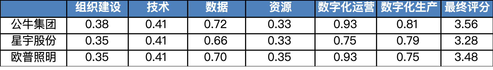
上述评估所参考内容均来自三家企业2023年-2025年年报
数字化成熟度评估及改进建议
本地数字化转型评估基于国家宏观政策指引与权威技术标准，并结合佛山照明的企业战略与业务痛点，形成的一套科学、严谨且高度定制化的诊断体系。其核心目的在于通过标准化的“体检”，精准识别佛山照明企业数字化转型的成熟度水平，为后续的战略落地提供清晰的路径指引。
12.1评估依据：政策与标准的双重驱动
本次评估严格遵循国家顶层设计与行业标准，确保评估的权威性与前瞻性。
- 宏观政策指引：以《制造业数字化转型实施指南》为行动纲领。该指南明确制造业数字化转型的总体要求、实施路径和关键场景，强调以解决企业痛点为导向，以场景数字化为切入点，分步实施、系统推进。这为评估指明了方向，确保我们的工作与国家推动新型工业化的战略保持一致。
- 核心评估标准：以 GB/T 43439-2023《信息技术服务 数字化转型 成熟度模型与评估》 为技术标尺。该国家标准提供了一套完整的成熟度模型，将数字化转型能力划分为不同等级，并规定了详细的评估方法。这使得评估结果不再是模糊的定性描述，而是可量化、可比较、可追溯的客观结论。
12.2评估方法：严谨的“四步法”流程
为确保评估结果的客观性，项目组采用一套标准化的“四步法”流程，从证据采集到最终定级，有序推进。
- 证据采集：通过深度访谈、系统演示、文档查阅等方式，收集佛山照明在组织、技术、生产、运营等各方面的客观事实与数据。
- 独立评级：由多位跨领域（如业务专家、技术专家）组成评委，依据GB/T 43439标准，对各自负责的能力域进行“背靠背”独立评级，初步判定每个子域所达到的成熟度等级。
- 集中合议：项目组召开讨论会，对独立评级结果进行交叉比对。对于存在分歧的子域，评委将出示各自的评估证据进行充分讨论，直至达成共识，形成最终的子域等级判定。
- 加权计算：将达成共识的子域等级转化为分数，并依据预设的权重体系，自下而上地计算出能力域得分和最终的综合成熟度总分，从而确定佛山照明数字化成熟度整体及分域等级。
12.3评估维度及权重：6大能力域与25个子域
依照GB/T 43439-2023《信息技术服务 数字化转型 成熟度模型与评估》，本次评估覆盖了企业数字化转型的全貌，共包含 6大核心能力域 和 25个具体的能力子域，确保评估无死角。
| 能力域 | 权重 | 能力子域 | 权重 | 能力子域描述 |
|---|---|---|---|---|
| 组织 | 10% | 组织建设 | 25% | 建立数字化转型领导机制与组织架构，明确决策、执行与支撑职责，保障转型有序推进。 |
| 组织 | 10% | 转型战略 | 25% | 将数字化纳入企业总体战略，制定转型愿景、目标与实施路径，并与业务战略对齐。 |
| 组织 | 10% | 流程管理 | 25% | 梳理、优化与标准化核心业务流程，推动流程在线化、自动化与端到端贯通。 |
| 组织 | 10% | 变革管理 | 25% | 管理组织、文化与人员变革，提升全员数字素养与变革接受度。 |
| 技术 | 10% | 研发管理 | 40% | 应用数字化工具支撑需求、设计与验证，提升研发效率与协同能力。 |
| 技术 | 10% | 技术创新 | 30% | 跟踪并引入新技术（AI、物联网等），驱动产品与业务模式创新。 |
| 技术 | 10% | 信息安全 | 30% | 建立信息安全与数据防护体系，保障数字化资产合规、可用、可控。 |
| 数据 | 20% | 业务数据化 | 30% | 将关键业务活动转化为可采集、可度量的数据，夯实数据底座。 |
| 数据 | 20% | 数据管理 | 30% | 建立数据标准、质量与主数据治理机制，保障数据一致、可信、可用。 |
| 数据 | 20% | 数据资产 | 20% | 盘点数据资产并推动确权运营，释放数据价值、支撑数据流通。 |
| 数据 | 20% | 数据业务化 | 20% | 以数据驱动业务决策与运营优化，实现从数据到价值的转化。 |
| 资源 | 10% | 基础设施 | 25% | 建设云、网络、算力等数字基础设施，提供稳定弹性的技术底座。 |
| 资源 | 10% | 应用支撑资源 | 25% | 统一应用平台与集成能力（如BTP/中间件），支撑系统互联互通。 |
| 资源 | 10% | 资金 | 25% | 保障数字化转型资金投入与ROI管控，支撑持续建设与运营。 |
| 资源 | 10% | 知识 | 25% | 沉淀与复用组织知识资产，支撑经验传承与智能应用。 |
| 数字化运营 | 25% | 数字化营销 | 35% | 以客户为中心构建全渠道数字营销与私域运营能力。 |
| 数字化运营 | 25% | 数字化财务 | 30% | 实现财务共享、司库与智能核算，提升资金与合规效率。 |
| 数字化运营 | 25% | 数字化供应链 | 35% | 打通计划、采购、仓储、物流，实现端到端可视化与协同。 |
| 数字化生产 | 25% | 产品设计 | 15% | 应用PLM/参数化设计提升开发效率与可制造性。 |
| 数字化生产 | 25% | 工艺设计 | 15% | 数字化工艺规划与仿真，支撑精益制造与快速换产。 |
| 数字化生产 | 25% | 计划调度 | 15% | 基于IBP/APS实现高效排产与动态调度。 |
| 数字化生产 | 25% | 生产作业 | 15% | 车间执行数字化（MES），实现人机料法环实时管控。 |
| 数字化生产 | 25% | 质量管控 | 15% | 全流程质量数据采集与追溯，支撑质量预防与改进。 |
| 数字化生产 | 25% | 设备管理 | 10% | 设备联网与预测性维护，提升综合效率（OEE）。 |
| 数字化生产 | 25% | 仓储配送 | 15% | 智能仓储与配送调度（WMS/EWM），提升库存周转与履约效率。 |
12.4评估团队：多维度融合
经过项目讨论，我们从组织维度（考虑内外结合、前中后台结合）、经历维度（数字化、业务）、岗位（一级部门负责人、业务骨干）邀请如下13名专家参与本次评估：
| 数字化成熟度评估参评人：共xx人 | 数字化成熟度评估参评人：共xx人 | 数字化成熟度评估参评人：共xx人 |
|---|---|---|
| 外部 | 刘金光 | 陈宇清 |
| 内部 | ||
| 数智化 | 钟胜文 | 吴梓填 |
| 企管 | 刘桓宇 | |
| 财务 | 吴一凡 | |
| 高明公司 | 莫品妃 | |
| 研究院 | 季超 | |
| 电商事业部 | 叶榕 | |
| 国际事业部 | 彭超 | |
| 家用事业部 | 程明华 | |
| 商用事业部 | 程进 | |
| 车灯 | 倪雨和 |
12.5评分标准：从等级到分数的量化过程
整个评估过程是一个将定性判断转化为定量结果的计算过程。
- 成熟度等级定义
GB/T 43439标准将数字化转型成熟度划分为五个递进的等级，每个等级都有明确的特征描述：
- 一级（初始级）：在局部环节开始应用数字技术，但缺乏系统性规划。
- 二级（规范级）：在主要业务领域实现数字化，并建立了相应的管理规范。
- 三级（集成级）：跨部门、跨系统的业务实现集成与数据共享，流程得到优化。
- 四级（优化级）：基于数据进行量化管理，实现业务流程的预测与动态优化。
- 五级（引领级）：形成数据驱动的创新生态，引领行业变革与发展。
- 分数计算逻辑
最终的得分并非简单相加，而是通过一套加权计算模型得出，确保结果能真实反映企业的战略重心。
- 第一步：子域定级与赋分 评估组对25个子域逐一进行等级判定（如“组织建设”判定为二级）。每个等级对应一个基础分（一级=1分，二级=2分，以此类推）。
- 第二步：计算能力域得分 将每个能力域下的子域得分，乘以该子域在域内的权重，然后求和，得出该能力域的加权得分。公式：能力域得分 = Σ (子域得分 × 子域权重)
- 第三步：计算综合成熟度总分 将6大能力域的得分，乘以我们为佛山照明量身定制的能力域权重（具体权重分配参考附录），再次求和，得出最终的综合得分（S）。公式：综合得分 (S) = Σ (能力域得分 × 能力域权重)
特别说明：这套能力域权重是根据佛山照明的战略重点（如数据问题、供应链协同问题）特别设计的，它确保了评估结果能精准反映企业在关键战场上的真实水平。
- 第四步：判定最终等级 将计算出的综合得分（S）与标准区间进行比对，最终确定佛山照明的整体数字化转型成熟度等级。
- 二级（规范级）：1.5 ≤ S < 2.5
- 三级（集成级）：2.5 ≤ S < 3.5
- （其他等级依此类推）
通过以上流程，最终呈现给佛山照明的不仅是一个等级结果，更是一套有政策依据、有标准支撑、有数据佐证的完整诊断报告，清晰地揭示了“结果如何得出”以及“未来应向何处去”。
12.6评估结果及分析
此部分内容后续基于评估结果进行补充
数字化转型规划考量因素
13.1国资监管
理解国家及国资委监管要求，是佛照设定数字化转型愿景的重要前提之一。2026年国资委最新发布的关键文件勾勒了清晰的路线图（基于公开资料解读）：
| 文件 | 核心要求 | 时间节点 |
|---|---|---|
| 1号文（财务数智化） | 建设全域数字化资源管理平台（DRP系统），实现财务系统集成化、信息数字化、监督智能化 | 2026年底：三大系统互联互通；2027年底：业财数据标准统一；2028年底：DRP系统建成 |
| 2号文（穿透式监管） | 构建“上下贯通、实时在线、自动预警”的智能化穿透式监管体系 | “十五五”期间全面建成 |
| 15号文（内控体系） | 构建“全级次覆盖、全业务在线、全系统联通、全要素监管”的内控新格局 | 2年左右完成信息系统穿透性测试 |
对佛山照明的直接启示：
- 财务数智化是硬约束。国资委明确要求财务数智化转型实行“一把手”负责制，纳入业绩考核。佛山照明的SAP升级（含ERP、合并）、财务共享、司库项目项目，本质上是满足这一要求的核心举措——其中SAP S/4必须承担起财务数智化转型的技术底座。
- 数据穿透是必然趋势。穿透式监管要求“从集团合并报表直接穿透到三级公司的明细账，从财务数据追溯到业务数据，从结果追溯到过程”。这意味着佛山照明的数据治理不能只满足于“能出报表”，必须做到“数据可追溯、可穿透”。
- 时间窗口明确。2026年底是第一阶段节点，要求核心财务系统全面上线和历史数据治理完成。佛山照明的SAP升级项目契合这一要求。
13.2业务发展战略
13.2.1战略摘要
为支撑佛山照明从“照明产品制造商”向“国内领先的智能健康光环境服务商”的战略跃升，未来3-5年的数字化建设核心任务将围绕“提升运营效率、强化协同能力、驱动业务增长、管控经营风险”四大方向展开。战略明确指出，数字化是驱动研产销协同、实现精益管理、支撑品牌出海和保障公司全域安全的关键路径。因此，数字化规划内容须严格与以下业务战略目标对齐。
13.2.2战略目标萃取
- 愿景与定位：从“照明产品制造商”迈向“国内领先的智能健康光环境服务商”，核心是业务模式从“卖产品”向“卖方案+卖服务”转型。
- 核心战略目标：
- 市场驱动与增长：深化渠道建设（尤其自主品牌和新兴工程渠道）、强化市场导向的研产销协同、提升品牌影响力，驱动营收与市场份额增长。
- 运营卓越与降本：通过精益化供应链管理、全方位的合规与风险管控、财务精益管理，实现降本增效、保障安全、严控风险。
- 创新驱动与升级：依托产品全生命周期管理和技术创新（尤其是AI与IoT融合），驱动产品向高端化、智能化、绿色化升级。
13.2.3核心竞争力提炼与数字化需求映射
| 业务战略重点 | 核心竞争要素 | 数字化需求映射（关键成功因子） |
|---|---|---|
| 供应链管理 | 专业高效的采购成本与供应商协同能力 | 必须构建覆盖寻源、采购、执行、风控全生命周期的数智化招采管理平台，实现合规透明、数据互通，以缩短采购周期，降低采购成本。 |
| 渠道建设与营销 | 自主可控的终端市场控制力与品牌传播力 | ToB端：必须强化对工程渠道、经销商体系的数字化支撑，实现库存全链路可视、订单高效协同。 |
| 研产销协同 | 以市场为导向的快速响应与精准交付能力 | 必须通过数据中台等数字化手段，打通研发、生产、销售系统，实现信息共享与实时交互。数字化要能支撑 “以市场为导向”的决策，提高研发预研精准性和产能匹配度，支撑销售增长。 |
| 合规与风险管理 | 全链条的风险即时识别与应对能力 | 必须构建覆盖合同条款分析、库存积压预警、收款坏账监控、资金风险监控等全链条的数字化风控体系。数字化要能实现风险的“事前预防、事中控制、事后分析”。 |
| 财务精益管理 | 数据驱动的经营决策与风险预警能力 | 财务数字化不能仅局限于“算准记对”，更要能支撑多维度的数据钻取与动态可视化呈现，推动财务向管理型、战略型转变，并强化“两金”管控，满足监管要求。必须依托集团统建及佛照自建的财务数字化平台体系，建立经营数据资产库，分阶段、有序构建“数据驱动”决策能力。 |
| 质量与安全 | 全链条质量追溯与安全生产保障能力 | 必须搭建覆盖质量全流程的信息化平台和追溯系统，以及安全生产风险分级管控与隐患排查整治的双重预防体系。数字化要能实现质量问题的全链条追溯以及安全的智能监控与预警。 |
13.3数字化现状核心痛点改良
“核心痛点与问题多维度分析核心”所表述的数字化痛点及问题，同样也是后续的数字化规划需要重要考量的因素之一，给规划提供深度的启示。
| 前面章节痛点维度 | 规划解决策略（原则） | 对架构设计与实施路径的影响 |
|---|---|---|
| 系统层面 | 核心重构，平台集成 | 1. 架构核心化：确立SAP S/4HANA为集团唯一、权威的业务与财务核心平台，所有关键交易数据必须在此闭环。 2. 集成平台化：严禁新的“点对点”接口开发。必须引入企业级集成平台（如SAP CPI），实现SAP与SRM、PLM、CRM、WMS等外围系统的标准化、服务化连接，构建“星型”集成架构，彻底解决“接口蜘蛛网”问题。 3. 体验现代化：规划中必须包含用户体验（UX）优化专项，推广Fiori等现代化前端技术，替代传统繁琐的GUI操作，提升用户效率与满意度。 |
| 数据层面 | 治理先行，标准统一 | 1. 治理前置化：将“主数据治理（MDG）”作为SAP S/4HANA上线的强制性前提，而非并行任务。在系统切换前，必须完成物料、客商、BOM等核心主数据的清洗、标准化和去重工作。 2. 标准权威化：在规划中明确各数据域（如物料、客户、供应商）的“唯一数据源”（Single Source of Truth）和责任部门（Data Owner），从源头杜绝“一物多码”、“数出多源”。 3. 资产服务化：规划建设统一的数据中台或数据仓库，将分散在各系统的数据进行汇聚、建模，形成面向主题（如供应链、财务、营销）的数据资产，为BI分析和AI应用提供高质量“燃料”。 |
| 流程层面 | 端到端拉通，消除断点 | 1. 流程架构重塑：在IT系统实施前，必须先由企管部牵头，开展L1-L3级企业级流程架构的梳理与优化，打破部门墙，明确跨部门流程（如OTC、PTP）的负责人（Process Owner）和权责边界。 2. 流程线上化：规划中需明确，所有核心业务流程必须在系统中实现端到端闭环，严禁出现“线上+线下”并行的断点流程（如OA审批后手工录入SAP）。 3. 流程自动化：识别流程中的高重复、低价值环节（如三单匹配、发票校验），在规划中优先引入RPA（机器人流程自动化）等技术，提升流程效率。 |
| 管理层面 | 业技融合，组织保障 | 1. 组织实体化：在2026年第一阶段，必须成立实体化的PMO（项目管理办公室），赋予其对项目优先级、资源调配的裁决权，改变“业务提需求、IT被动接”的局面。 2. 人才复合化：规划中需包含“数字化BP（业务合作伙伴）”培养计划，从业务部门选拔骨干，进行数字化赋能，使其成为业务与IT之间的“翻译官”和“催化剂”。 3. 运营体系化：建立ITSM（IT服务管理）体系，规范需求管理、变更管理和故障处理流程。将数字化项目的运维从“被动救火”转变为“主动运营”，并建立项目后评价机制，量化IT投入的业务价值。 |
。
下阶段工作：数字化蓝图规划方案展望
承接现状整体诊断成果及确认之思路，未来数字化规划咨询项目组将从佛山照明数字化转型详细规划方案及主数据规划方案两条主线推进，最终为佛山照明数字化转型完成顶层路线指引并奠定底层夯实基础。
数字化转型详细规划方案：
从战略到应用层到治理体系到落地指引的自上而下端到端详细规划。包含数字化战略及管控规划、数字化应用蓝图规划（业务架构、应用架构、数据架构、技术架构、基础设施、安全体系、数字化场景）、数字化治理规划、实施路径建议等。
主数据规划方案：
基于前期调研分析，结合公司数据资产现状，对公司主数据标准体系和管理体系进行规划设计。包含数据资产目录、主数据C-U矩阵、主数据标准、数据管理手册等。
附录
15.1数字化成熟度评估（GB/T 43439-2023）
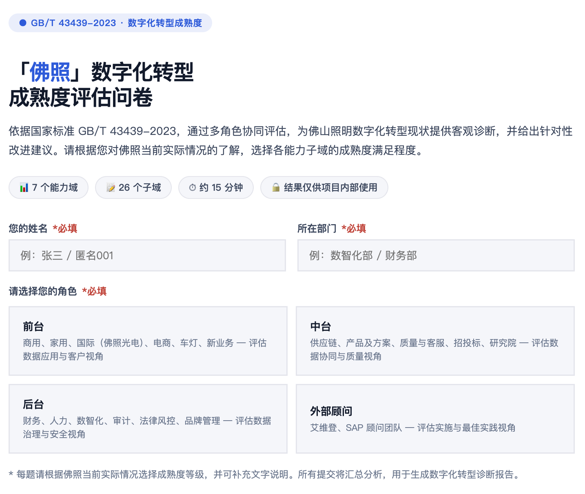
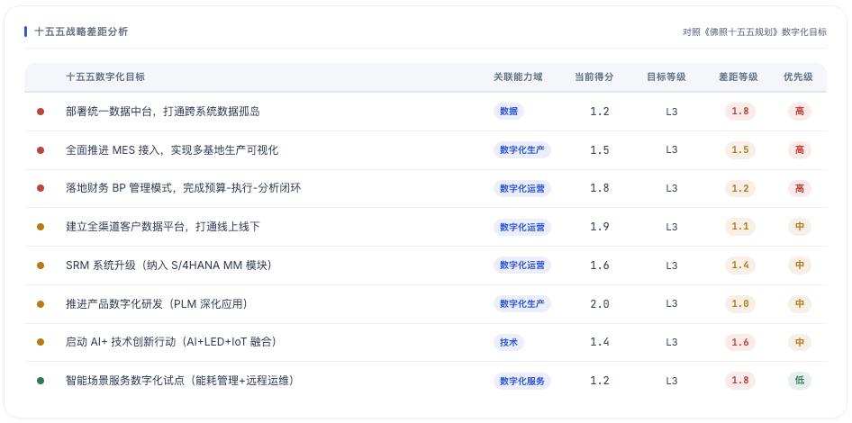
15.2数据管理能力成熟度评估评估（GB/T 36073—2025（DCMM））
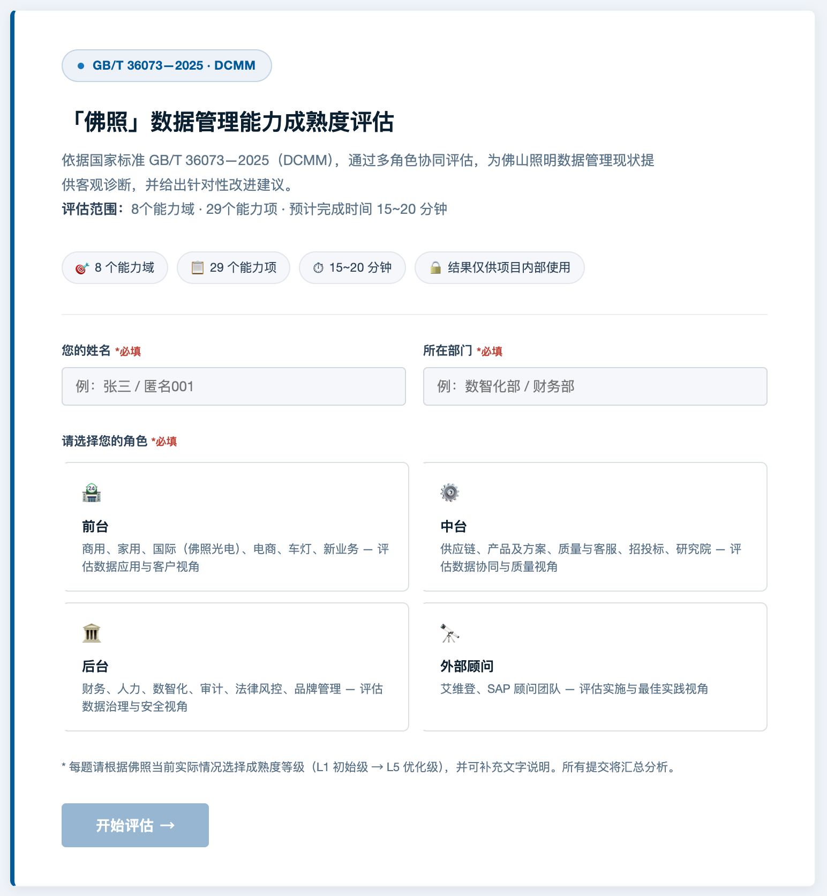